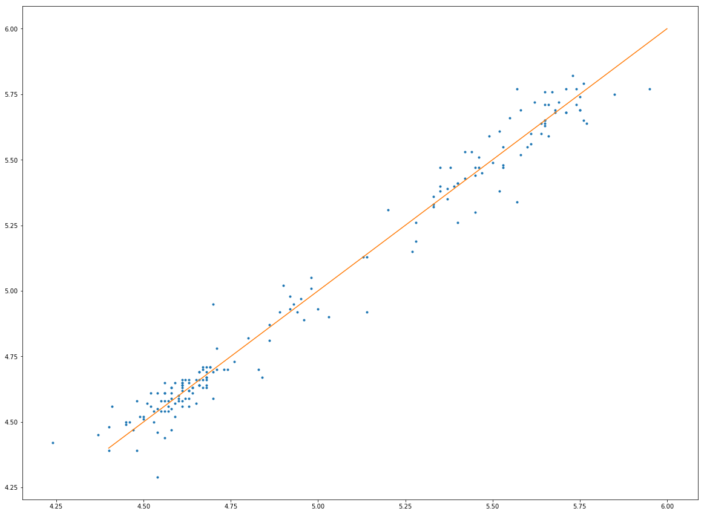

NOTEBOOK
print("hellow world")
hellow world
利用tushare获取股票信息
TuShare是一个免费、开源的python财经数据接口包。
import tushare as ts
d = ts.get_tick_data('600223',date='2017-06-26')
print(d)
time price change volume amount type
0 15:00:00 4.61 -- 0 0 中性盘
1 15:00:00 4.61 -- 0 0 中性盘
2 14:59:41 4.61 -- 0 0 买盘
3 14:59:31 4.61 -- 59 27199 买盘
4 14:59:16 4.61 -0.01 770 354970 卖盘
5 14:59:10 4.62 -- 3 1386 买盘
6 14:59:07 4.62 -- 95 43890 买盘
7 14:58:43 4.62 -- 414 191646 卖盘
8 14:58:34 4.62 -- 95 43890 卖盘
9 14:58:16 4.62 -- 456 210755 买盘
10 14:58:04 4.62 -- 1 462 买盘
11 14:56:52 4.62 0.01 5 2310 买盘
12 14:56:38 4.61 -- 16 7376 卖盘
13 14:56:17 4.61 -0.01 50 23050 卖盘
14 14:56:08 4.62 0.01 1 462 买盘
15 14:56:02 4.61 -- 22 10142 卖盘
16 14:55:41 4.61 -- 139 64079 买盘
17 14:55:30 4.61 -- 40 18440 买盘
18 14:55:11 4.61 -- 1 461 买盘
19 14:54:56 4.61 0.01 25 11525 买盘
20 14:54:29 4.60 -0.01 52 23919 卖盘
21 14:53:41 4.61 -- 7 3227 买盘
22 14:51:32 4.61 -- 108 49788 买盘
23 14:51:08 4.61 -0.01 242 111562 卖盘
24 14:50:02 4.62 -- 6 2772 买盘
25 14:49:17 4.62 0.01 1 462 买盘
26 14:48:41 4.61 -- 1 461 卖盘
27 14:47:41 4.61 -- 6 2766 卖盘
28 14:47:23 4.61 -0.01 16 7376 卖盘
29 14:46:56 4.62 -- 28 12936 买盘
.. ... ... ... ... ... ...
488 09:36:46 4.51 -0.02 11 4961 卖盘
489 09:36:37 4.53 0.02 142 64326 买盘
490 09:36:28 4.51 -- 0 0 卖盘
491 09:36:10 4.51 -0.01 232 104632 卖盘
492 09:36:01 4.52 -- 1 451 买盘
493 09:35:52 4.52 -0.01 341 154132 卖盘
494 09:35:46 4.53 -- 15 6795 卖盘
495 09:35:40 4.53 -- 7 3171 卖盘
496 09:35:34 4.53 -- 31 14043 卖盘
497 09:35:31 4.53 0.01 776 351528 买盘
498 09:35:16 4.52 -- 176 79551 卖盘
499 09:35:04 4.52 -- 18 8135 卖盘
500 09:34:04 4.52 0.01 40 18080 买盘
501 09:33:22 4.51 -0.01 1 451 卖盘
502 09:32:19 4.52 -- 0 0 中性盘
503 09:32:13 4.52 -- 50 22599 卖盘
504 09:32:10 4.52 -- 51 23051 卖盘
505 09:32:07 4.52 -- 9 4067 卖盘
506 09:32:04 4.52 -- 2 903 卖盘
507 09:32:01 4.52 -0.01 107 48363 卖盘
508 09:31:58 4.53 0.01 19 8607 买盘
509 09:31:49 4.52 -0.01 13 5875 卖盘
510 09:31:37 4.53 0.01 382 173046 买盘
511 09:31:25 4.52 0.01 196 88591 买盘
512 09:30:58 4.51 -- 16 7216 买盘
513 09:30:55 4.51 -- 56 25256 买盘
514 09:30:52 4.51 -0.01 7 3157 卖盘
515 09:30:40 4.52 -0.01 207 93563 卖盘
516 09:30:22 4.53 0.01 5 2265 买盘
517 09:30:04 4.52 4.52 30 13559 买盘
[518 rows x 6 columns]
艰难的画出来第一张图。
%matplotlib inline
%config InlineBackend.close_figures = False
import matplotlib.pyplot as plt
import matplotlib.dates as mdate
import pandas as pd
fig=plt.figure(figsize=(20,15))
ax1=fig.add_subplot(111)
ax1.xaxis.set_major_formatter(mdate.DateFormatter('%H:%M:%S'))
plt.xticks(pd.date_range(d.time.index[0],d.time.index[-1],freq='0.1min'))
plt.plot(d.time,d.price,'-r')
plt.show()

这一张图不是很好，没有去除没有数据的点。
print(d.time[190])
13:04:38
不画了，这是个坑。
p=ts.get_hist_data('600223',start='2017-01-01',end='2017-10-1')
print(p)
open high close low volume price_change p_change ma5 \
date
2017-10-09 4.65 4.72 4.66 4.63 58628.52 0.07 1.52 4.648
2017-09-29 4.62 4.62 4.59 4.57 30227.69 0.00 0.00 4.656
2017-09-28 4.70 4.71 4.59 4.56 71444.00 -0.11 -2.34 4.712
2017-09-27 4.73 4.73 4.70 4.67 45649.68 0.00 0.00 4.774
2017-09-26 4.67 4.73 4.70 4.65 28251.60 0.00 0.00 4.844
2017-09-25 4.83 4.88 4.70 4.65 60356.37 -0.17 -3.49 4.908
2017-09-22 4.86 4.93 4.87 4.85 45943.38 -0.03 -0.61 4.952
2017-09-21 5.03 5.03 4.90 4.89 73277.59 -0.15 -2.97 4.968
2017-09-20 4.98 5.05 5.05 4.91 114327.97 0.03 0.60 4.930
2017-09-19 4.90 5.22 5.02 4.86 228972.70 0.10 2.03 4.862
2017-09-18 4.89 4.97 4.92 4.83 111200.31 -0.03 -0.61 4.796
2017-09-15 4.70 5.18 4.95 4.70 267977.00 0.24 5.10 4.752
2017-09-14 4.69 4.76 4.71 4.68 46513.38 0.00 0.00 4.704
2017-09-13 4.68 4.71 4.71 4.67 31676.13 0.02 0.43 4.702
2017-09-12 4.70 4.72 4.69 4.67 51184.74 -0.01 -0.21 4.706
2017-09-11 4.71 4.72 4.70 4.68 31846.06 -0.01 -0.21 4.724
2017-09-08 4.67 4.73 4.71 4.67 41789.97 0.01 0.21 4.726
2017-09-07 4.74 4.80 4.70 4.70 66111.43 -0.03 -0.63 4.722
2017-09-06 4.76 4.81 4.73 4.73 48667.00 -0.05 -1.05 4.716
2017-09-05 4.71 4.79 4.78 4.69 57311.94 0.07 1.49 4.704
2017-09-04 4.69 4.72 4.71 4.67 45561.31 0.02 0.43 4.680
2017-09-01 4.68 4.74 4.69 4.67 42540.36 0.02 0.43 4.676
2017-08-31 4.68 4.69 4.67 4.66 32355.20 0.00 0.00 4.668
2017-08-30 4.68 4.69 4.67 4.65 27330.45 0.01 0.21 4.656
2017-08-29 4.68 4.70 4.66 4.65 40420.00 -0.03 -0.64 4.650
2017-08-28 4.66 4.69 4.69 4.65 44510.78 0.04 0.86 4.644
2017-08-25 4.59 4.68 4.65 4.58 62386.05 0.04 0.87 4.626
2017-08-24 4.64 4.65 4.61 4.58 31767.40 -0.03 -0.65 4.612
2017-08-23 4.61 4.65 4.64 4.59 68480.67 0.01 0.22 4.602
2017-08-22 4.58 4.64 4.63 4.58 65655.94 0.03 0.65 4.578
... ... ... ... ... ... ... ... ...
2017-02-20 5.58 5.72 5.69 5.57 76206.24 0.14 2.52 5.560
2017-02-17 5.60 5.62 5.55 5.53 49900.23 -0.04 -0.72 5.524
2017-02-16 5.49 5.69 5.59 5.45 102805.34 0.10 1.82 5.508
2017-02-15 5.50 5.53 5.49 5.44 75247.49 0.01 0.18 5.484
2017-02-14 5.53 5.53 5.48 5.45 45401.90 -0.03 -0.54 5.468
2017-02-13 5.46 5.58 5.51 5.46 53025.99 0.04 0.73 5.454
2017-02-10 5.45 5.50 5.47 5.44 68594.00 0.00 0.00 5.432
2017-02-09 5.38 5.49 5.47 5.37 75940.80 0.06 1.11 5.408
2017-02-08 5.40 5.41 5.41 5.32 79580.70 0.00 0.00 5.394
2017-02-07 5.40 5.42 5.41 5.34 42358.19 0.01 0.18 5.390
2017-02-06 5.35 5.41 5.40 5.35 29212.13 0.05 0.94 5.384
2017-02-03 5.37 5.44 5.35 5.32 26795.27 -0.05 -0.93 5.376
2017-01-26 5.39 5.47 5.40 5.38 25441.11 0.01 0.19 5.368
2017-01-25 5.37 5.40 5.39 5.35 37756.37 0.01 0.19 5.326
2017-01-24 5.35 5.40 5.38 5.34 48154.04 0.02 0.37 5.300
2017-01-23 5.33 5.40 5.36 5.27 67134.31 0.05 0.94 5.290
2017-01-20 5.20 5.34 5.31 5.18 42014.10 0.12 2.31 5.286
2017-01-19 5.28 5.28 5.19 5.17 37465.28 -0.07 -1.33 5.344
2017-01-18 5.28 5.34 5.26 5.25 48109.45 -0.07 -1.31 5.434
2017-01-17 5.33 5.40 5.33 5.07 103666.52 -0.01 -0.19 5.536
2017-01-16 5.57 5.57 5.34 5.20 67702.53 -0.26 -4.64 5.628
2017-01-13 5.64 5.69 5.60 5.58 46772.90 -0.04 -0.71 5.714
2017-01-12 5.77 5.77 5.64 5.61 51529.87 -0.13 -2.25 5.714
2017-01-11 5.74 5.80 5.77 5.66 70851.03 -0.02 -0.34 5.716
2017-01-10 5.76 5.83 5.79 5.64 111462.88 0.02 0.35 5.694
2017-01-09 5.57 5.96 5.77 5.56 183416.70 0.17 3.04 5.642
2017-01-06 5.61 5.67 5.60 5.55 48063.84 -0.05 -0.89 5.576
2017-01-05 5.65 5.69 5.65 5.61 43516.07 -0.01 -0.18 5.546
2017-01-04 5.55 5.72 5.66 5.51 100632.01 0.13 2.35 5.504
2017-01-03 5.44 5.54 5.53 5.43 69161.83 0.09 1.65 5.458
ma10 ma20 v_ma5 v_ma10 v_ma20 turnover
date
2017-10-09 4.778 4.769 46840.30 75707.95 75567.87 0.59
2017-09-29 4.804 4.772 47185.87 80965.13 74914.51 0.30
2017-09-28 4.840 4.777 50329.01 104740.06 75530.15 0.71
2017-09-27 4.852 4.781 50695.72 102247.00 73575.71 0.46
2017-09-26 4.853 4.779 64431.38 100849.64 72659.74 0.28
2017-09-25 4.852 4.777 104575.60 103142.96 73268.16 0.60
2017-09-22 4.852 4.777 114744.39 100291.93 72475.88 0.46
2017-09-21 4.836 4.766 159151.11 99876.59 73298.02 0.73
2017-09-20 4.816 4.751 153798.27 99159.97 71222.51 1.14
2017-09-19 4.784 4.731 137267.90 92593.87 68930.14 2.29
2017-09-18 4.760 4.711 101710.31 75427.80 60764.31 1.11
2017-09-15 4.739 4.695 85839.46 68863.90 56951.76 2.68
2017-09-14 4.713 4.677 40602.06 46320.23 45258.90 0.46
2017-09-13 4.709 4.669 44521.67 44904.41 44330.83 0.32
2017-09-12 4.705 4.660 47919.84 44469.85 43741.87 0.51
2017-09-11 4.702 4.651 49145.28 43393.37 42399.08 0.32
2017-09-08 4.701 4.641 51888.33 44659.84 41953.68 0.42
2017-09-07 4.695 4.629 52038.41 46719.45 41600.24 0.66
2017-09-06 4.686 4.621 45287.16 43285.05 39935.72 0.49
2017-09-05 4.677 4.612 41019.85 45266.42 38817.03 0.57
2017-09-04 4.662 4.601 37641.46 46100.82 39266.59 0.46
2017-09-01 4.651 4.596 37431.36 45039.63 38354.55 0.42
2017-08-31 4.640 4.591 41400.50 44197.56 37804.79 0.32
2017-08-30 4.629 4.588 41282.94 43757.24 37542.29 0.27
2017-08-29 4.614 4.584 49512.98 43013.90 37517.88 0.40
2017-08-28 4.600 4.582 54560.17 41404.79 37097.99 0.44
2017-08-25 4.581 4.579 52647.90 39247.51 36393.91 0.62
2017-08-24 4.562 4.575 46994.63 36481.03 35061.77 0.32
2017-08-23 4.555 4.573 46231.54 36586.39 35459.12 0.68
2017-08-22 4.547 4.567 36514.82 32367.65 33687.50 0.66
... ... ... ... ... ... ...
2017-02-20 5.507 5.422 69912.24 66906.09 56740.47 0.76
2017-02-17 5.478 5.405 65276.19 62206.68 56315.29 0.50
2017-02-16 5.458 5.407 69014.94 59896.18 56158.92 1.03
2017-02-15 5.439 5.410 63642.04 52159.76 53595.15 0.75
2017-02-14 5.429 5.424 64508.68 48410.65 53375.32 0.45
2017-02-13 5.419 5.439 63899.94 48685.86 56678.37 0.53
2017-02-10 5.404 5.452 59137.16 50096.69 63197.91 0.69
2017-02-09 5.388 5.459 50777.42 47438.70 62171.40 0.76
2017-02-08 5.360 5.468 40677.48 43591.15 60550.16 0.80
2017-02-07 5.345 5.480 32312.61 40444.03 61602.73 0.42
2017-02-06 5.337 5.486 33471.78 46574.86 62942.91 0.29
2017-02-03 5.331 5.488 41056.22 50423.90 64203.02 0.27
2017-01-26 5.356 5.493 44099.99 52421.66 64718.19 0.25
2017-01-25 5.380 5.495 46504.82 55030.54 65277.13 0.38
2017-01-24 5.418 5.497 48575.44 58340.00 65162.88 0.48
2017-01-23 5.459 5.499 59677.93 64670.89 65804.79 0.67
2017-01-20 5.500 5.506 59791.58 76299.13 64926.91 0.42
2017-01-19 5.529 5.519 60743.34 76904.10 65502.07 0.37
2017-01-18 5.575 5.539 63556.25 77509.18 69648.49 0.48
2017-01-17 5.615 5.551 68104.57 82761.43 69104.64 1.04
2017-01-16 5.635 5.559 69663.84 79310.97 65746.06 0.68
2017-01-13 5.645 5.566 92806.68 77982.13 64603.83 0.47
2017-01-12 5.630 5.559 93064.86 77014.72 64734.90 0.51
2017-01-11 5.610 5.546 91462.10 75523.72 65334.29 0.71
2017-01-10 5.576 5.530 97418.30 71985.77 65529.18 1.11
2017-01-09 5.539 5.512 88958.09 66938.70 62990.24 1.83
2017-01-06 5.511 5.509 63157.59 53554.69 56067.98 0.48
2017-01-05 5.509 5.518 60964.57 54100.04 55461.19 0.43
2017-01-04 5.503 5.524 59585.35 61787.81 55146.75 1.01
2017-01-03 5.486 5.526 46553.23 55447.85 52013.82 0.69
[185 rows x 14 columns]
import matplotlib.finance as mpf
from matplotlib.pylab import date2num
import datetime
i=0
for pdog in p:
# 将时间转换为数字
opena=0
#print(p.open)
date_time = datetime.datetime.strptime(p.index[i],'%Y-%m-%d')
t = date2num(date_time)
opena = float(pdog.open[i])
higha=float(pdog.high[i])
lowa=float(pdog.low[i])
closea=float(pdog.close[i])
datas = (t,opena,higha,lowa,closea)
data_list.append(datas)
i=i+1
print(datas)
# # 创建一个子图
# fig, ax = plt.subplots(facecolor=(0.5, 0.5, 0.5))
# ax.xaxis_date()#设置x轴为日期
# plt.xticks(rotation=45)
# plt.yticks()
# mpf.candlestick_ohlc(ax,data_list,width=1.5,colorup='r',colordown='green')
# plt.grid()
/home/yu/.local/lib/python3.6/site-packages/matplotlib/cbook/deprecation.py:106: MatplotlibDeprecationWarning: The finance module has been deprecated in mpl 2.0 and will be removed in mpl 2.2. Please use the module mpl_finance instead.
warnings.warn(message, mplDeprecation, stacklevel=1)
---------------------------------------------------------------------------
AttributeError Traceback (most recent call last)
<ipython-input-31-c3b4bd54f379> in <module>()
9 date_time = datetime.datetime.strptime(p.index[i],'%Y-%m-%d')
10 t = date2num(date_time)
---> 11 opena = float(pdog.open[i])
12 higha=float(pdog.high[i])
13 lowa=float(pdog.low[i])
AttributeError: 'str' object has no attribute 'open'
pd.__version__
'0.20.3'
a=float(p.open[1])
print(a)
4.62
画一张别的图。
openal=[]
openal2=[]
for pig in p.open:
openal.append(float(pig))
for pig in p.close:
openal2.append(float(pig))
# plt.plot(openal,openal2,'0')
print(openal,openal2)
[4.65, 4.62, 4.7, 4.73, 4.67, 4.83, 4.86, 5.03, 4.98, 4.9, 4.89, 4.7, 4.69, 4.68, 4.7, 4.71, 4.67, 4.74, 4.76, 4.71, 4.69, 4.68, 4.68, 4.68, 4.68, 4.66, 4.59, 4.64, 4.61, 4.58, 4.6, 4.56, 4.52, 4.5, 4.49, 4.45, 4.54, 4.57, 4.57, 4.61, 4.56, 4.61, 4.58, 4.6, 4.63, 4.58, 4.57, 4.51, 4.5, 4.53, 4.46, 4.47, 4.45, 4.37, 4.24, 4.54, 4.56, 4.55, 4.65, 4.68, 4.63, 4.64, 4.66, 4.63, 4.67, 4.66, 4.62, 4.61, 4.63, 4.61, 4.52, 4.59, 4.63, 4.66, 4.67, 4.61, 4.68, 4.61, 4.61, 4.56, 4.63, 4.66, 4.66, 4.61, 4.54, 4.58, 4.41, 4.56, 4.59, 4.48, 4.4, 4.4, 4.48, 4.58, 4.6, 4.58, 4.64, 4.56, 4.54, 4.55, 4.53, 4.84, 4.8, 4.86, 4.96, 4.95, 5.0, 4.98, 4.92, 4.93, 4.92, 4.94, 5.14, 5.14, 5.13, 5.27, 5.4, 5.52, 5.58, 5.52, 5.53, 5.42, 5.42, 5.45, 5.47, 5.35, 5.33, 5.45, 5.46, 5.53, 5.61, 5.66, 5.71, 5.95, 5.67, 5.75, 5.85, 5.73, 5.74, 5.75, 5.69, 5.75, 5.65, 5.76, 5.71, 5.65, 5.65, 5.68, 5.62, 5.64, 5.65, 5.65, 5.71, 5.66, 5.68, 5.58, 5.6, 5.49, 5.5, 5.53, 5.46, 5.45, 5.38, 5.4, 5.4, 5.35, 5.37, 5.39, 5.37, 5.35, 5.33, 5.2, 5.28, 5.28, 5.33, 5.57, 5.64, 5.77, 5.74, 5.76, 5.57, 5.61, 5.65, 5.55, 5.44] [4.66, 4.59, 4.59, 4.7, 4.7, 4.7, 4.87, 4.9, 5.05, 5.02, 4.92, 4.95, 4.71, 4.71, 4.69, 4.7, 4.71, 4.7, 4.73, 4.78, 4.71, 4.69, 4.67, 4.67, 4.66, 4.69, 4.65, 4.61, 4.64, 4.63, 4.6, 4.58, 4.56, 4.52, 4.52, 4.5, 4.46, 4.54, 4.56, 4.56, 4.61, 4.58, 4.61, 4.59, 4.62, 4.63, 4.58, 4.57, 4.51, 4.5, 4.5, 4.47, 4.49, 4.45, 4.42, 4.29, 4.54, 4.58, 4.57, 4.63, 4.66, 4.63, 4.64, 4.65, 4.63, 4.69, 4.66, 4.63, 4.62, 4.64, 4.61, 4.52, 4.59, 4.66, 4.66, 4.65, 4.64, 4.65, 4.62, 4.61, 4.56, 4.64, 4.64, 4.66, 4.61, 4.55, 4.56, 4.44, 4.57, 4.58, 4.48, 4.39, 4.39, 4.47, 4.58, 4.59, 4.63, 4.65, 4.55, 4.54, 4.54, 4.67, 4.82, 4.81, 4.89, 4.97, 4.93, 5.01, 4.98, 4.95, 4.93, 4.92, 4.92, 5.13, 5.13, 5.15, 5.26, 5.38, 5.52, 5.61, 5.55, 5.53, 5.43, 5.44, 5.45, 5.47, 5.32, 5.3, 5.47, 5.47, 5.56, 5.59, 5.68, 5.77, 5.76, 5.69, 5.75, 5.82, 5.71, 5.74, 5.72, 5.69, 5.76, 5.65, 5.77, 5.71, 5.63, 5.68, 5.72, 5.64, 5.64, 5.65, 5.68, 5.71, 5.69, 5.69, 5.55, 5.59, 5.49, 5.48, 5.51, 5.47, 5.47, 5.41, 5.41, 5.4, 5.35, 5.4, 5.39, 5.38, 5.36, 5.31, 5.19, 5.26, 5.33, 5.34, 5.6, 5.64, 5.77, 5.79, 5.77, 5.6, 5.65, 5.66, 5.53]
fig2=plt.figure(figsize=(20,15))
plt.plot(openal,openal2,'.')
a=[4.4,6]
b=a
plt.plot(a,b,'-')
plt.show(fig2)

from scipy import linalg
# help(linalg)
Help on package scipy.linalg in scipy:
NAME
scipy.linalg
DESCRIPTION
====================================
Linear algebra (:mod:`scipy.linalg`)
====================================
.. currentmodule:: scipy.linalg
Linear algebra functions.
.. seealso::
`numpy.linalg` for more linear algebra functions. Note that
although `scipy.linalg` imports most of them, identically named
functions from `scipy.linalg` may offer more or slightly differing
functionality.
Basics
======
.. autosummary::
:toctree: generated/
inv - Find the inverse of a square matrix
solve - Solve a linear system of equations
solve_banded - Solve a banded linear system
solveh_banded - Solve a Hermitian or symmetric banded system
solve_circulant - Solve a circulant system
solve_triangular - Solve a triangular matrix
solve_toeplitz - Solve a toeplitz matrix
det - Find the determinant of a square matrix
norm - Matrix and vector norm
lstsq - Solve a linear least-squares problem
pinv - Pseudo-inverse (Moore-Penrose) using lstsq
pinv2 - Pseudo-inverse using svd
pinvh - Pseudo-inverse of hermitian matrix
kron - Kronecker product of two arrays
tril - Construct a lower-triangular matrix from a given matrix
triu - Construct an upper-triangular matrix from a given matrix
orthogonal_procrustes - Solve an orthogonal Procrustes problem
matrix_balance - Balance matrix entries with a similarity transformation
subspace_angles - Compute the subspace angles between two matrices
LinAlgError
Eigenvalue Problems
===================
.. autosummary::
:toctree: generated/
eig - Find the eigenvalues and eigenvectors of a square matrix
eigvals - Find just the eigenvalues of a square matrix
eigh - Find the e-vals and e-vectors of a Hermitian or symmetric matrix
eigvalsh - Find just the eigenvalues of a Hermitian or symmetric matrix
eig_banded - Find the eigenvalues and eigenvectors of a banded matrix
eigvals_banded - Find just the eigenvalues of a banded matrix
eigh_tridiagonal - Find the eigenvalues and eigenvectors of a tridiagonal matrix
eigvalsh_tridiagonal - Find just the eigenvalues of a tridiagonal matrix
Decompositions
==============
.. autosummary::
:toctree: generated/
lu - LU decomposition of a matrix
lu_factor - LU decomposition returning unordered matrix and pivots
lu_solve - Solve Ax=b using back substitution with output of lu_factor
svd - Singular value decomposition of a matrix
svdvals - Singular values of a matrix
diagsvd - Construct matrix of singular values from output of svd
orth - Construct orthonormal basis for the range of A using svd
cholesky - Cholesky decomposition of a matrix
cholesky_banded - Cholesky decomp. of a sym. or Hermitian banded matrix
cho_factor - Cholesky decomposition for use in solving a linear system
cho_solve - Solve previously factored linear system
cho_solve_banded - Solve previously factored banded linear system
polar - Compute the polar decomposition.
qr - QR decomposition of a matrix
qr_multiply - QR decomposition and multiplication by Q
qr_update - Rank k QR update
qr_delete - QR downdate on row or column deletion
qr_insert - QR update on row or column insertion
rq - RQ decomposition of a matrix
qz - QZ decomposition of a pair of matrices
ordqz - QZ decomposition of a pair of matrices with reordering
schur - Schur decomposition of a matrix
rsf2csf - Real to complex Schur form
hessenberg - Hessenberg form of a matrix
.. seealso::
`scipy.linalg.interpolative` -- Interpolative matrix decompositions
Matrix Functions
================
.. autosummary::
:toctree: generated/
expm - Matrix exponential
logm - Matrix logarithm
cosm - Matrix cosine
sinm - Matrix sine
tanm - Matrix tangent
coshm - Matrix hyperbolic cosine
sinhm - Matrix hyperbolic sine
tanhm - Matrix hyperbolic tangent
signm - Matrix sign
sqrtm - Matrix square root
funm - Evaluating an arbitrary matrix function
expm_frechet - Frechet derivative of the matrix exponential
expm_cond - Relative condition number of expm in the Frobenius norm
fractional_matrix_power - Fractional matrix power
Matrix Equation Solvers
=======================
.. autosummary::
:toctree: generated/
solve_sylvester - Solve the Sylvester matrix equation
solve_continuous_are - Solve the continuous-time algebraic Riccati equation
solve_discrete_are - Solve the discrete-time algebraic Riccati equation
solve_continuous_lyapunov - Solve the continous-time Lyapunov equation
solve_discrete_lyapunov - Solve the discrete-time Lyapunov equation
Sketches and Random Projections
===============================
.. autosummary::
:toctree: generated/
clarkson_woodruff_transform - Applies the Clarkson Woodruff Sketch (a.k.a CountMin Sketch)
Special Matrices
================
.. autosummary::
:toctree: generated/
block_diag - Construct a block diagonal matrix from submatrices
circulant - Circulant matrix
companion - Companion matrix
dft - Discrete Fourier transform matrix
hadamard - Hadamard matrix of order 2**n
hankel - Hankel matrix
helmert - Helmert matrix
hilbert - Hilbert matrix
invhilbert - Inverse Hilbert matrix
leslie - Leslie matrix
pascal - Pascal matrix
invpascal - Inverse Pascal matrix
toeplitz - Toeplitz matrix
tri - Construct a matrix filled with ones at and below a given diagonal
Low-level routines
==================
.. autosummary::
:toctree: generated/
get_blas_funcs
get_lapack_funcs
find_best_blas_type
.. seealso::
`scipy.linalg.blas` -- Low-level BLAS functions
`scipy.linalg.lapack` -- Low-level LAPACK functions
`scipy.linalg.cython_blas` -- Low-level BLAS functions for Cython
`scipy.linalg.cython_lapack` -- Low-level LAPACK functions for Cython
PACKAGE CONTENTS
_cython_signature_generator
_decomp_polar
_decomp_qz
_decomp_update
_expm_frechet
_fblas
_flapack
_flinalg
_generate_pyx
_interpolative
_interpolative_backend
_matfuncs_inv_ssq
_matfuncs_sqrtm
_procrustes
_sketches
_solve_toeplitz
_solvers
_testutils
basic
blas
cython_blas
cython_lapack
decomp
decomp_cholesky
decomp_lu
decomp_qr
decomp_schur
decomp_svd
flinalg
interpolative
lapack
linalg_version
matfuncs
misc
setup
special_matrices
tests (package)
CLASSES
builtins.Exception(builtins.BaseException)
numpy.linalg.linalg.LinAlgError
class LinAlgError(builtins.Exception)
| Generic Python-exception-derived object raised by linalg functions.
|
| General purpose exception class, derived from Python's exception.Exception
| class, programmatically raised in linalg functions when a Linear
| Algebra-related condition would prevent further correct execution of the
| function.
|
| Parameters
| ----------
| None
|
| Examples
| --------
| >>> from numpy import linalg as LA
| >>> LA.inv(np.zeros((2,2)))
| Traceback (most recent call last):
| File "<stdin>", line 1, in <module>
| File "...linalg.py", line 350,
| in inv return wrap(solve(a, identity(a.shape[0], dtype=a.dtype)))
| File "...linalg.py", line 249,
| in solve
| raise LinAlgError('Singular matrix')
| numpy.linalg.LinAlgError: Singular matrix
|
| Method resolution order:
| LinAlgError
| builtins.Exception
| builtins.BaseException
| builtins.object
|
| Data descriptors defined here:
|
| __weakref__
| list of weak references to the object (if defined)
|
| ----------------------------------------------------------------------
| Methods inherited from builtins.Exception:
|
| __init__(self, /, *args, **kwargs)
| Initialize self. See help(type(self)) for accurate signature.
|
| __new__(*args, **kwargs) from builtins.type
| Create and return a new object. See help(type) for accurate signature.
|
| ----------------------------------------------------------------------
| Methods inherited from builtins.BaseException:
|
| __delattr__(self, name, /)
| Implement delattr(self, name).
|
| __getattribute__(self, name, /)
| Return getattr(self, name).
|
| __reduce__(...)
| helper for pickle
|
| __repr__(self, /)
| Return repr(self).
|
| __setattr__(self, name, value, /)
| Implement setattr(self, name, value).
|
| __setstate__(...)
|
| __str__(self, /)
| Return str(self).
|
| with_traceback(...)
| Exception.with_traceback(tb) --
| set self.__traceback__ to tb and return self.
|
| ----------------------------------------------------------------------
| Data descriptors inherited from builtins.BaseException:
|
| __cause__
| exception cause
|
| __context__
| exception context
|
| __dict__
|
| __suppress_context__
|
| __traceback__
|
| args
FUNCTIONS
block_diag(*arrs)
Create a block diagonal matrix from provided arrays.
Given the inputs `A`, `B` and `C`, the output will have these
arrays arranged on the diagonal::
[[A, 0, 0],
[0, B, 0],
[0, 0, C]]
Parameters
----------
A, B, C, ... : array_like, up to 2-D
Input arrays. A 1-D array or array_like sequence of length `n` is
treated as a 2-D array with shape ``(1,n)``.
Returns
-------
D : ndarray
Array with `A`, `B`, `C`, ... on the diagonal. `D` has the
same dtype as `A`.
Notes
-----
If all the input arrays are square, the output is known as a
block diagonal matrix.
Empty sequences (i.e., array-likes of zero size) will not be ignored.
Noteworthy, both [] and [[]] are treated as matrices with shape ``(1,0)``.
Examples
--------
>>> from scipy.linalg import block_diag
>>> A = [[1, 0],
... [0, 1]]
>>> B = [[3, 4, 5],
... [6, 7, 8]]
>>> C = [[7]]
>>> P = np.zeros((2, 0), dtype='int32')
>>> block_diag(A, B, C)
array([[1, 0, 0, 0, 0, 0],
[0, 1, 0, 0, 0, 0],
[0, 0, 3, 4, 5, 0],
[0, 0, 6, 7, 8, 0],
[0, 0, 0, 0, 0, 7]])
>>> block_diag(A, P, B, C)
array([[1, 0, 0, 0, 0, 0],
[0, 1, 0, 0, 0, 0],
[0, 0, 0, 0, 0, 0],
[0, 0, 0, 0, 0, 0],
[0, 0, 3, 4, 5, 0],
[0, 0, 6, 7, 8, 0],
[0, 0, 0, 0, 0, 7]])
>>> block_diag(1.0, [2, 3], [[4, 5], [6, 7]])
array([[ 1., 0., 0., 0., 0.],
[ 0., 2., 3., 0., 0.],
[ 0., 0., 0., 4., 5.],
[ 0., 0., 0., 6., 7.]])
cho_factor(a, lower=False, overwrite_a=False, check_finite=True)
Compute the Cholesky decomposition of a matrix, to use in cho_solve
Returns a matrix containing the Cholesky decomposition,
``A = L L*`` or ``A = U* U`` of a Hermitian positive-definite matrix `a`.
The return value can be directly used as the first parameter to cho_solve.
.. warning::
The returned matrix also contains random data in the entries not
used by the Cholesky decomposition. If you need to zero these
entries, use the function `cholesky` instead.
Parameters
----------
a : (M, M) array_like
Matrix to be decomposed
lower : bool, optional
Whether to compute the upper or lower triangular Cholesky factorization
(Default: upper-triangular)
overwrite_a : bool, optional
Whether to overwrite data in a (may improve performance)
check_finite : bool, optional
Whether to check that the input matrix contains only finite numbers.
Disabling may give a performance gain, but may result in problems
(crashes, non-termination) if the inputs do contain infinities or NaNs.
Returns
-------
c : (M, M) ndarray
Matrix whose upper or lower triangle contains the Cholesky factor
of `a`. Other parts of the matrix contain random data.
lower : bool
Flag indicating whether the factor is in the lower or upper triangle
Raises
------
LinAlgError
Raised if decomposition fails.
See also
--------
cho_solve : Solve a linear set equations using the Cholesky factorization
of a matrix.
cho_solve(c_and_lower, b, overwrite_b=False, check_finite=True)
Solve the linear equations A x = b, given the Cholesky factorization of A.
Parameters
----------
(c, lower) : tuple, (array, bool)
Cholesky factorization of a, as given by cho_factor
b : array
Right-hand side
overwrite_b : bool, optional
Whether to overwrite data in b (may improve performance)
check_finite : bool, optional
Whether to check that the input matrices contain only finite numbers.
Disabling may give a performance gain, but may result in problems
(crashes, non-termination) if the inputs do contain infinities or NaNs.
Returns
-------
x : array
The solution to the system A x = b
See also
--------
cho_factor : Cholesky factorization of a matrix
cho_solve_banded(cb_and_lower, b, overwrite_b=False, check_finite=True)
Solve the linear equations A x = b, given the Cholesky factorization of A.
Parameters
----------
(cb, lower) : tuple, (array, bool)
`cb` is the Cholesky factorization of A, as given by cholesky_banded.
`lower` must be the same value that was given to cholesky_banded.
b : array
Right-hand side
overwrite_b : bool, optional
If True, the function will overwrite the values in `b`.
check_finite : bool, optional
Whether to check that the input matrices contain only finite numbers.
Disabling may give a performance gain, but may result in problems
(crashes, non-termination) if the inputs do contain infinities or NaNs.
Returns
-------
x : array
The solution to the system A x = b
See also
--------
cholesky_banded : Cholesky factorization of a banded matrix
Notes
-----
.. versionadded:: 0.8.0
cholesky(a, lower=False, overwrite_a=False, check_finite=True)
Compute the Cholesky decomposition of a matrix.
Returns the Cholesky decomposition, :math:`A = L L^*` or
:math:`A = U^* U` of a Hermitian positive-definite matrix A.
Parameters
----------
a : (M, M) array_like
Matrix to be decomposed
lower : bool, optional
Whether to compute the upper or lower triangular Cholesky
factorization. Default is upper-triangular.
overwrite_a : bool, optional
Whether to overwrite data in `a` (may improve performance).
check_finite : bool, optional
Whether to check that the input matrix contains only finite numbers.
Disabling may give a performance gain, but may result in problems
(crashes, non-termination) if the inputs do contain infinities or NaNs.
Returns
-------
c : (M, M) ndarray
Upper- or lower-triangular Cholesky factor of `a`.
Raises
------
LinAlgError : if decomposition fails.
Examples
--------
>>> from scipy import array, linalg, dot
>>> a = array([[1,-2j],[2j,5]])
>>> L = linalg.cholesky(a, lower=True)
>>> L
array([[ 1.+0.j, 0.+0.j],
[ 0.+2.j, 1.+0.j]])
>>> dot(L, L.T.conj())
array([[ 1.+0.j, 0.-2.j],
[ 0.+2.j, 5.+0.j]])
cholesky_banded(ab, overwrite_ab=False, lower=False, check_finite=True)
Cholesky decompose a banded Hermitian positive-definite matrix
The matrix a is stored in ab either in lower diagonal or upper
diagonal ordered form::
ab[u + i - j, j] == a[i,j] (if upper form; i <= j)
ab[ i - j, j] == a[i,j] (if lower form; i >= j)
Example of ab (shape of a is (6,6), u=2)::
upper form:
* * a02 a13 a24 a35
* a01 a12 a23 a34 a45
a00 a11 a22 a33 a44 a55
lower form:
a00 a11 a22 a33 a44 a55
a10 a21 a32 a43 a54 *
a20 a31 a42 a53 * *
Parameters
----------
ab : (u + 1, M) array_like
Banded matrix
overwrite_ab : bool, optional
Discard data in ab (may enhance performance)
lower : bool, optional
Is the matrix in the lower form. (Default is upper form)
check_finite : bool, optional
Whether to check that the input matrix contains only finite numbers.
Disabling may give a performance gain, but may result in problems
(crashes, non-termination) if the inputs do contain infinities or NaNs.
Returns
-------
c : (u + 1, M) ndarray
Cholesky factorization of a, in the same banded format as ab
circulant(c)
Construct a circulant matrix.
Parameters
----------
c : (N,) array_like
1-D array, the first column of the matrix.
Returns
-------
A : (N, N) ndarray
A circulant matrix whose first column is `c`.
See Also
--------
toeplitz : Toeplitz matrix
hankel : Hankel matrix
solve_circulant : Solve a circulant system.
Notes
-----
.. versionadded:: 0.8.0
Examples
--------
>>> from scipy.linalg import circulant
>>> circulant([1, 2, 3])
array([[1, 3, 2],
[2, 1, 3],
[3, 2, 1]])
clarkson_woodruff_transform(input_matrix, sketch_size, seed=None)
"
Find low-rank matrix approximation via the Clarkson-Woodruff Transform.
Given an input_matrix ``A`` of size ``(n, d)``, compute a matrix ``A'`` of
size (sketch_size, d) which holds:
.. math:: ||Ax|| = (1 \pm \epsilon)||A'x||
with high probability.
The error is related to the number of rows of the sketch and it is bounded
.. math:: poly(r(\epsilon^{-1}))
Parameters
----------
input_matrix: array_like
Input matrix, of shape ``(n, d)``.
sketch_size: int
Number of rows for the sketch.
seed : None or int or `numpy.random.RandomState` instance, optional
This parameter defines the ``RandomState`` object to use for drawing
random variates.
If None (or ``np.random``), the global ``np.random`` state is used.
If integer, it is used to seed the local ``RandomState`` instance.
Default is None.
Returns
-------
A' : array_like
Sketch of the input matrix ``A``, of size ``(sketch_size, d)``.
Notes
-----
This is an implementation of the Clarkson-Woodruff Transform (CountSketch).
``A'`` can be computed in principle in ``O(nnz(A))`` (with ``nnz`` meaning
the number of nonzero entries), however we don't take advantage of sparse
matrices in this implementation.
Examples
--------
Given a big dense matrix ``A``:
>>> from scipy import linalg
>>> n_rows, n_columns, sketch_n_rows = (2000, 100, 100)
>>> threshold = 0.1
>>> tmp = np.random.normal(0, 0.1, n_rows*n_columns)
>>> A = np.reshape(tmp, (n_rows, n_columns))
>>> sketch = linalg.clarkson_woodruff_transform(A, sketch_n_rows)
>>> sketch.shape
(100, 100)
>>> normA = linalg.norm(A)
>>> norm_sketch = linalg.norm(sketch)
Now with high probability, the condition ``abs(normA-normSketch) <
threshold`` holds.
References
----------
.. [1] Kenneth L. Clarkson and David P. Woodruff. Low rank approximation and
regression in input sparsity time. In STOC, 2013.
companion(a)
Create a companion matrix.
Create the companion matrix [1]_ associated with the polynomial whose
coefficients are given in `a`.
Parameters
----------
a : (N,) array_like
1-D array of polynomial coefficients. The length of `a` must be
at least two, and ``a[0]`` must not be zero.
Returns
-------
c : (N-1, N-1) ndarray
The first row of `c` is ``-a[1:]/a[0]``, and the first
sub-diagonal is all ones. The data-type of the array is the same
as the data-type of ``1.0*a[0]``.
Raises
------
ValueError
If any of the following are true: a) ``a.ndim != 1``;
b) ``a.size < 2``; c) ``a[0] == 0``.
Notes
-----
.. versionadded:: 0.8.0
References
----------
.. [1] R. A. Horn & C. R. Johnson, *Matrix Analysis*. Cambridge, UK:
Cambridge University Press, 1999, pp. 146-7.
Examples
--------
>>> from scipy.linalg import companion
>>> companion([1, -10, 31, -30])
array([[ 10., -31., 30.],
[ 1., 0., 0.],
[ 0., 1., 0.]])
coshm(A)
Compute the hyperbolic matrix cosine.
This routine uses expm to compute the matrix exponentials.
Parameters
----------
A : (N, N) array_like
Input array.
Returns
-------
coshm : (N, N) ndarray
Hyperbolic matrix cosine of `A`
Examples
--------
>>> from scipy.linalg import tanhm, sinhm, coshm
>>> a = np.array([[1.0, 3.0], [1.0, 4.0]])
>>> c = coshm(a)
>>> c
array([[ 11.24592233, 38.76236492],
[ 12.92078831, 50.00828725]])
Verify tanhm(a) = sinhm(a).dot(inv(coshm(a)))
>>> t = tanhm(a)
>>> s = sinhm(a)
>>> t - s.dot(np.linalg.inv(c))
array([[ 2.72004641e-15, 4.55191440e-15],
[ 0.00000000e+00, -5.55111512e-16]])
cosm(A)
Compute the matrix cosine.
This routine uses expm to compute the matrix exponentials.
Parameters
----------
A : (N, N) array_like
Input array
Returns
-------
cosm : (N, N) ndarray
Matrix cosine of A
Examples
--------
>>> from scipy.linalg import expm, sinm, cosm
Euler's identity (exp(i*theta) = cos(theta) + i*sin(theta))
applied to a matrix:
>>> a = np.array([[1.0, 2.0], [-1.0, 3.0]])
>>> expm(1j*a)
array([[ 0.42645930+1.89217551j, -2.13721484-0.97811252j],
[ 1.06860742+0.48905626j, -1.71075555+0.91406299j]])
>>> cosm(a) + 1j*sinm(a)
array([[ 0.42645930+1.89217551j, -2.13721484-0.97811252j],
[ 1.06860742+0.48905626j, -1.71075555+0.91406299j]])
det(a, overwrite_a=False, check_finite=True)
Compute the determinant of a matrix
The determinant of a square matrix is a value derived arithmetically
from the coefficients of the matrix.
The determinant for a 3x3 matrix, for example, is computed as follows::
a b c
d e f = A
g h i
det(A) = a*e*i + b*f*g + c*d*h - c*e*g - b*d*i - a*f*h
Parameters
----------
a : (M, M) array_like
A square matrix.
overwrite_a : bool, optional
Allow overwriting data in a (may enhance performance).
check_finite : bool, optional
Whether to check that the input matrix contains only finite numbers.
Disabling may give a performance gain, but may result in problems
(crashes, non-termination) if the inputs do contain infinities or NaNs.
Returns
-------
det : float or complex
Determinant of `a`.
Notes
-----
The determinant is computed via LU factorization, LAPACK routine z/dgetrf.
Examples
--------
>>> from scipy import linalg
>>> a = np.array([[1,2,3], [4,5,6], [7,8,9]])
>>> linalg.det(a)
0.0
>>> a = np.array([[0,2,3], [4,5,6], [7,8,9]])
>>> linalg.det(a)
3.0
dft(n, scale=None)
Discrete Fourier transform matrix.
Create the matrix that computes the discrete Fourier transform of a
sequence [1]_. The n-th primitive root of unity used to generate the
matrix is exp(-2*pi*i/n), where i = sqrt(-1).
Parameters
----------
n : int
Size the matrix to create.
scale : str, optional
Must be None, 'sqrtn', or 'n'.
If `scale` is 'sqrtn', the matrix is divided by `sqrt(n)`.
If `scale` is 'n', the matrix is divided by `n`.
If `scale` is None (the default), the matrix is not normalized, and the
return value is simply the Vandermonde matrix of the roots of unity.
Returns
-------
m : (n, n) ndarray
The DFT matrix.
Notes
-----
When `scale` is None, multiplying a vector by the matrix returned by
`dft` is mathematically equivalent to (but much less efficient than)
the calculation performed by `scipy.fftpack.fft`.
.. versionadded:: 0.14.0
References
----------
.. [1] "DFT matrix", http://en.wikipedia.org/wiki/DFT_matrix
Examples
--------
>>> from scipy.linalg import dft
>>> np.set_printoptions(precision=5, suppress=True)
>>> x = np.array([1, 2, 3, 0, 3, 2, 1, 0])
>>> m = dft(8)
>>> m.dot(x) # Compute the DFT of x
array([ 12.+0.j, -2.-2.j, 0.-4.j, -2.+2.j, 4.+0.j, -2.-2.j,
-0.+4.j, -2.+2.j])
Verify that ``m.dot(x)`` is the same as ``fft(x)``.
>>> from scipy.fftpack import fft
>>> fft(x) # Same result as m.dot(x)
array([ 12.+0.j, -2.-2.j, 0.-4.j, -2.+2.j, 4.+0.j, -2.-2.j,
0.+4.j, -2.+2.j])
diagsvd(s, M, N)
Construct the sigma matrix in SVD from singular values and size M, N.
Parameters
----------
s : (M,) or (N,) array_like
Singular values
M : int
Size of the matrix whose singular values are `s`.
N : int
Size of the matrix whose singular values are `s`.
Returns
-------
S : (M, N) ndarray
The S-matrix in the singular value decomposition
eig(a, b=None, left=False, right=True, overwrite_a=False, overwrite_b=False, check_finite=True, homogeneous_eigvals=False)
Solve an ordinary or generalized eigenvalue problem of a square matrix.
Find eigenvalues w and right or left eigenvectors of a general matrix::
a vr[:,i] = w[i] b vr[:,i]
a.H vl[:,i] = w[i].conj() b.H vl[:,i]
where ``.H`` is the Hermitian conjugation.
Parameters
----------
a : (M, M) array_like
A complex or real matrix whose eigenvalues and eigenvectors
will be computed.
b : (M, M) array_like, optional
Right-hand side matrix in a generalized eigenvalue problem.
Default is None, identity matrix is assumed.
left : bool, optional
Whether to calculate and return left eigenvectors. Default is False.
right : bool, optional
Whether to calculate and return right eigenvectors. Default is True.
overwrite_a : bool, optional
Whether to overwrite `a`; may improve performance. Default is False.
overwrite_b : bool, optional
Whether to overwrite `b`; may improve performance. Default is False.
check_finite : bool, optional
Whether to check that the input matrices contain only finite numbers.
Disabling may give a performance gain, but may result in problems
(crashes, non-termination) if the inputs do contain infinities or NaNs.
homogeneous_eigvals : bool, optional
If True, return the eigenvalues in homogeneous coordinates.
In this case ``w`` is a (2, M) array so that::
w[1,i] a vr[:,i] = w[0,i] b vr[:,i]
Default is False.
Returns
-------
w : (M,) or (2, M) double or complex ndarray
The eigenvalues, each repeated according to its
multiplicity. The shape is (M,) unless
``homogeneous_eigvals=True``.
vl : (M, M) double or complex ndarray
The normalized left eigenvector corresponding to the eigenvalue
``w[i]`` is the column vl[:,i]. Only returned if ``left=True``.
vr : (M, M) double or complex ndarray
The normalized right eigenvector corresponding to the eigenvalue
``w[i]`` is the column ``vr[:,i]``. Only returned if ``right=True``.
Raises
------
LinAlgError
If eigenvalue computation does not converge.
See Also
--------
eigvals : eigenvalues of general arrays
eigh : Eigenvalues and right eigenvectors for symmetric/Hermitian arrays.
eig_banded : eigenvalues and right eigenvectors for symmetric/Hermitian
band matrices
eigh_tridiagonal : eigenvalues and right eiegenvectors for
symmetric/Hermitian tridiagonal matrices
eig_banded(a_band, lower=False, eigvals_only=False, overwrite_a_band=False, select='a', select_range=None, max_ev=0, check_finite=True)
Solve real symmetric or complex hermitian band matrix eigenvalue problem.
Find eigenvalues w and optionally right eigenvectors v of a::
a v[:,i] = w[i] v[:,i]
v.H v = identity
The matrix a is stored in a_band either in lower diagonal or upper
diagonal ordered form:
a_band[u + i - j, j] == a[i,j] (if upper form; i <= j)
a_band[ i - j, j] == a[i,j] (if lower form; i >= j)
where u is the number of bands above the diagonal.
Example of a_band (shape of a is (6,6), u=2)::
upper form:
* * a02 a13 a24 a35
* a01 a12 a23 a34 a45
a00 a11 a22 a33 a44 a55
lower form:
a00 a11 a22 a33 a44 a55
a10 a21 a32 a43 a54 *
a20 a31 a42 a53 * *
Cells marked with * are not used.
Parameters
----------
a_band : (u+1, M) array_like
The bands of the M by M matrix a.
lower : bool, optional
Is the matrix in the lower form. (Default is upper form)
eigvals_only : bool, optional
Compute only the eigenvalues and no eigenvectors.
(Default: calculate also eigenvectors)
overwrite_a_band : bool, optional
Discard data in a_band (may enhance performance)
select : {'a', 'v', 'i'}, optional
Which eigenvalues to calculate
====== ========================================
select calculated
====== ========================================
'a' All eigenvalues
'v' Eigenvalues in the interval (min, max]
'i' Eigenvalues with indices min <= i <= max
====== ========================================
select_range : (min, max), optional
Range of selected eigenvalues
max_ev : int, optional
For select=='v', maximum number of eigenvalues expected.
For other values of select, has no meaning.
In doubt, leave this parameter untouched.
check_finite : bool, optional
Whether to check that the input matrix contains only finite numbers.
Disabling may give a performance gain, but may result in problems
(crashes, non-termination) if the inputs do contain infinities or NaNs.
Returns
-------
w : (M,) ndarray
The eigenvalues, in ascending order, each repeated according to its
multiplicity.
v : (M, M) float or complex ndarray
The normalized eigenvector corresponding to the eigenvalue w[i] is
the column v[:,i].
Raises
------
LinAlgError
If eigenvalue computation does not converge.
See Also
--------
eigvals_banded : eigenvalues for symmetric/Hermitian band matrices
eig : eigenvalues and right eigenvectors of general arrays.
eigh : eigenvalues and right eigenvectors for symmetric/Hermitian arrays
eigh_tridiagonal : eigenvalues and right eiegenvectors for
symmetric/Hermitian tridiagonal matrices
eigh(a, b=None, lower=True, eigvals_only=False, overwrite_a=False, overwrite_b=False, turbo=True, eigvals=None, type=1, check_finite=True)
Solve an ordinary or generalized eigenvalue problem for a complex
Hermitian or real symmetric matrix.
Find eigenvalues w and optionally eigenvectors v of matrix `a`, where
`b` is positive definite::
a v[:,i] = w[i] b v[:,i]
v[i,:].conj() a v[:,i] = w[i]
v[i,:].conj() b v[:,i] = 1
Parameters
----------
a : (M, M) array_like
A complex Hermitian or real symmetric matrix whose eigenvalues and
eigenvectors will be computed.
b : (M, M) array_like, optional
A complex Hermitian or real symmetric definite positive matrix in.
If omitted, identity matrix is assumed.
lower : bool, optional
Whether the pertinent array data is taken from the lower or upper
triangle of `a`. (Default: lower)
eigvals_only : bool, optional
Whether to calculate only eigenvalues and no eigenvectors.
(Default: both are calculated)
turbo : bool, optional
Use divide and conquer algorithm (faster but expensive in memory,
only for generalized eigenvalue problem and if eigvals=None)
eigvals : tuple (lo, hi), optional
Indexes of the smallest and largest (in ascending order) eigenvalues
and corresponding eigenvectors to be returned: 0 <= lo <= hi <= M-1.
If omitted, all eigenvalues and eigenvectors are returned.
type : int, optional
Specifies the problem type to be solved:
type = 1: a v[:,i] = w[i] b v[:,i]
type = 2: a b v[:,i] = w[i] v[:,i]
type = 3: b a v[:,i] = w[i] v[:,i]
overwrite_a : bool, optional
Whether to overwrite data in `a` (may improve performance)
overwrite_b : bool, optional
Whether to overwrite data in `b` (may improve performance)
check_finite : bool, optional
Whether to check that the input matrices contain only finite numbers.
Disabling may give a performance gain, but may result in problems
(crashes, non-termination) if the inputs do contain infinities or NaNs.
Returns
-------
w : (N,) float ndarray
The N (1<=N<=M) selected eigenvalues, in ascending order, each
repeated according to its multiplicity.
v : (M, N) complex ndarray
(if eigvals_only == False)
The normalized selected eigenvector corresponding to the
eigenvalue w[i] is the column v[:,i].
Normalization:
type 1 and 3: v.conj() a v = w
type 2: inv(v).conj() a inv(v) = w
type = 1 or 2: v.conj() b v = I
type = 3: v.conj() inv(b) v = I
Raises
------
LinAlgError
If eigenvalue computation does not converge,
an error occurred, or b matrix is not definite positive. Note that
if input matrices are not symmetric or hermitian, no error is reported
but results will be wrong.
See Also
--------
eigvalsh : eigenvalues of symmetric or Hermitian arrays
eig : eigenvalues and right eigenvectors for non-symmetric arrays
eigh : eigenvalues and right eigenvectors for symmetric/Hermitian arrays
eigh_tridiagonal : eigenvalues and right eiegenvectors for
symmetric/Hermitian tridiagonal matrices
eigh_tridiagonal(d, e, eigvals_only=False, select='a', select_range=None, check_finite=True, tol=0.0, lapack_driver='auto')
Solve eigenvalue problem for a real symmetric tridiagonal matrix.
Find eigenvalues `w` and optionally right eigenvectors `v` of ``a``::
a v[:,i] = w[i] v[:,i]
v.H v = identity
For a real symmetric matrix ``a`` with diagonal elements `d` and
off-diagonal elements `e`.
Parameters
----------
d : ndarray, shape (ndim,)
The diagonal elements of the array.
e : ndarray, shape (ndim-1,)
The off-diagonal elements of the array.
select : {'a', 'v', 'i'}, optional
Which eigenvalues to calculate
====== ========================================
select calculated
====== ========================================
'a' All eigenvalues
'v' Eigenvalues in the interval (min, max]
'i' Eigenvalues with indices min <= i <= max
====== ========================================
select_range : (min, max), optional
Range of selected eigenvalues
check_finite : bool, optional
Whether to check that the input matrix contains only finite numbers.
Disabling may give a performance gain, but may result in problems
(crashes, non-termination) if the inputs do contain infinities or NaNs.
tol : float
The absolute tolerance to which each eigenvalue is required
(only used when 'stebz' is the `lapack_driver`).
An eigenvalue (or cluster) is considered to have converged if it
lies in an interval of this width. If <= 0. (default),
the value ``eps*|a|`` is used where eps is the machine precision,
and ``|a|`` is the 1-norm of the matrix ``a``.
lapack_driver : str
LAPACK function to use, can be 'auto', 'stemr', 'stebz', 'sterf',
or 'stev'. When 'auto' (default), it will use 'stemr' if ``select='a'``
and 'stebz' otherwise. When 'stebz' is used to find the eigenvalues and
``eigvals_only=False``, then a second LAPACK call (to ``?STEIN``) is
used to find the corresponding eigenvectors. 'sterf' can only be
used when ``eigvals_only=True`` and ``select='a'``. 'stev' can only
be used when ``select='a'``.
Returns
-------
w : (M,) ndarray
The eigenvalues, in ascending order, each repeated according to its
multiplicity.
v : (M, M) ndarray
The normalized eigenvector corresponding to the eigenvalue ``w[i]`` is
the column ``v[:,i]``.
Raises
------
LinAlgError
If eigenvalue computation does not converge.
See Also
--------
eigvalsh_tridiagonal : eigenvalues of symmetric/Hermitian tridiagonal
matrices
eig : eigenvalues and right eigenvectors for non-symmetric arrays
eigh : eigenvalues and right eigenvectors for symmetric/Hermitian arrays
eig_banded : eigenvalues and right eigenvectors for symmetric/Hermitian
band matrices
Notes
-----
This function makes use of LAPACK ``S/DSTEMR`` routines.
eigvals(a, b=None, overwrite_a=False, check_finite=True, homogeneous_eigvals=False)
Compute eigenvalues from an ordinary or generalized eigenvalue problem.
Find eigenvalues of a general matrix::
a vr[:,i] = w[i] b vr[:,i]
Parameters
----------
a : (M, M) array_like
A complex or real matrix whose eigenvalues and eigenvectors
will be computed.
b : (M, M) array_like, optional
Right-hand side matrix in a generalized eigenvalue problem.
If omitted, identity matrix is assumed.
overwrite_a : bool, optional
Whether to overwrite data in a (may improve performance)
check_finite : bool, optional
Whether to check that the input matrices contain only finite numbers.
Disabling may give a performance gain, but may result in problems
(crashes, non-termination) if the inputs do contain infinities
or NaNs.
homogeneous_eigvals : bool, optional
If True, return the eigenvalues in homogeneous coordinates.
In this case ``w`` is a (2, M) array so that::
w[1,i] a vr[:,i] = w[0,i] b vr[:,i]
Default is False.
Returns
-------
w : (M,) or (2, M) double or complex ndarray
The eigenvalues, each repeated according to its multiplicity
but not in any specific order. The shape is (M,) unless
``homogeneous_eigvals=True``.
Raises
------
LinAlgError
If eigenvalue computation does not converge
See Also
--------
eig : eigenvalues and right eigenvectors of general arrays.
eigvalsh : eigenvalues of symmetric or Hermitian arrays
eigvals_banded : eigenvalues for symmetric/Hermitian band matrices
eigvalsh_tridiagonal : eigenvalues of symmetric/Hermitian tridiagonal
matrices
eigvals_banded(a_band, lower=False, overwrite_a_band=False, select='a', select_range=None, check_finite=True)
Solve real symmetric or complex hermitian band matrix eigenvalue problem.
Find eigenvalues w of a::
a v[:,i] = w[i] v[:,i]
v.H v = identity
The matrix a is stored in a_band either in lower diagonal or upper
diagonal ordered form:
a_band[u + i - j, j] == a[i,j] (if upper form; i <= j)
a_band[ i - j, j] == a[i,j] (if lower form; i >= j)
where u is the number of bands above the diagonal.
Example of a_band (shape of a is (6,6), u=2)::
upper form:
* * a02 a13 a24 a35
* a01 a12 a23 a34 a45
a00 a11 a22 a33 a44 a55
lower form:
a00 a11 a22 a33 a44 a55
a10 a21 a32 a43 a54 *
a20 a31 a42 a53 * *
Cells marked with * are not used.
Parameters
----------
a_band : (u+1, M) array_like
The bands of the M by M matrix a.
lower : bool, optional
Is the matrix in the lower form. (Default is upper form)
overwrite_a_band : bool, optional
Discard data in a_band (may enhance performance)
select : {'a', 'v', 'i'}, optional
Which eigenvalues to calculate
====== ========================================
select calculated
====== ========================================
'a' All eigenvalues
'v' Eigenvalues in the interval (min, max]
'i' Eigenvalues with indices min <= i <= max
====== ========================================
select_range : (min, max), optional
Range of selected eigenvalues
check_finite : bool, optional
Whether to check that the input matrix contains only finite numbers.
Disabling may give a performance gain, but may result in problems
(crashes, non-termination) if the inputs do contain infinities or NaNs.
Returns
-------
w : (M,) ndarray
The eigenvalues, in ascending order, each repeated according to its
multiplicity.
Raises
------
LinAlgError
If eigenvalue computation does not converge.
See Also
--------
eig_banded : eigenvalues and right eigenvectors for symmetric/Hermitian
band matrices
eigvalsh_tridiagonal : eigenvalues of symmetric/Hermitian tridiagonal
matrices
eigvals : eigenvalues of general arrays
eigh : eigenvalues and right eigenvectors for symmetric/Hermitian arrays
eig : eigenvalues and right eigenvectors for non-symmetric arrays
eigvalsh(a, b=None, lower=True, overwrite_a=False, overwrite_b=False, turbo=True, eigvals=None, type=1, check_finite=True)
Solve an ordinary or generalized eigenvalue problem for a complex
Hermitian or real symmetric matrix.
Find eigenvalues w of matrix a, where b is positive definite::
a v[:,i] = w[i] b v[:,i]
v[i,:].conj() a v[:,i] = w[i]
v[i,:].conj() b v[:,i] = 1
Parameters
----------
a : (M, M) array_like
A complex Hermitian or real symmetric matrix whose eigenvalues and
eigenvectors will be computed.
b : (M, M) array_like, optional
A complex Hermitian or real symmetric definite positive matrix in.
If omitted, identity matrix is assumed.
lower : bool, optional
Whether the pertinent array data is taken from the lower or upper
triangle of `a`. (Default: lower)
turbo : bool, optional
Use divide and conquer algorithm (faster but expensive in memory,
only for generalized eigenvalue problem and if eigvals=None)
eigvals : tuple (lo, hi), optional
Indexes of the smallest and largest (in ascending order) eigenvalues
and corresponding eigenvectors to be returned: 0 <= lo < hi <= M-1.
If omitted, all eigenvalues and eigenvectors are returned.
type : int, optional
Specifies the problem type to be solved:
type = 1: a v[:,i] = w[i] b v[:,i]
type = 2: a b v[:,i] = w[i] v[:,i]
type = 3: b a v[:,i] = w[i] v[:,i]
overwrite_a : bool, optional
Whether to overwrite data in `a` (may improve performance)
overwrite_b : bool, optional
Whether to overwrite data in `b` (may improve performance)
check_finite : bool, optional
Whether to check that the input matrices contain only finite numbers.
Disabling may give a performance gain, but may result in problems
(crashes, non-termination) if the inputs do contain infinities or NaNs.
Returns
-------
w : (N,) float ndarray
The N (1<=N<=M) selected eigenvalues, in ascending order, each
repeated according to its multiplicity.
Raises
------
LinAlgError
If eigenvalue computation does not converge,
an error occurred, or b matrix is not definite positive. Note that
if input matrices are not symmetric or hermitian, no error is reported
but results will be wrong.
See Also
--------
eigh : eigenvalues and right eigenvectors for symmetric/Hermitian arrays
eigvals : eigenvalues of general arrays
eigvals_banded : eigenvalues for symmetric/Hermitian band matrices
eigvalsh_tridiagonal : eigenvalues of symmetric/Hermitian tridiagonal
matrices
eigvalsh_tridiagonal(d, e, select='a', select_range=None, check_finite=True, tol=0.0, lapack_driver='auto')
Solve eigenvalue problem for a real symmetric tridiagonal matrix.
Find eigenvalues `w` of ``a``::
a v[:,i] = w[i] v[:,i]
v.H v = identity
For a real symmetric matrix ``a`` with diagonal elements `d` and
off-diagonal elements `e`.
Parameters
----------
d : ndarray, shape (ndim,)
The diagonal elements of the array.
e : ndarray, shape (ndim-1,)
The off-diagonal elements of the array.
select : {'a', 'v', 'i'}, optional
Which eigenvalues to calculate
====== ========================================
select calculated
====== ========================================
'a' All eigenvalues
'v' Eigenvalues in the interval (min, max]
'i' Eigenvalues with indices min <= i <= max
====== ========================================
select_range : (min, max), optional
Range of selected eigenvalues
check_finite : bool, optional
Whether to check that the input matrix contains only finite numbers.
Disabling may give a performance gain, but may result in problems
(crashes, non-termination) if the inputs do contain infinities or NaNs.
tol : float
The absolute tolerance to which each eigenvalue is required
(only used when ``lapack_driver='stebz'``).
An eigenvalue (or cluster) is considered to have converged if it
lies in an interval of this width. If <= 0. (default),
the value ``eps*|a|`` is used where eps is the machine precision,
and ``|a|`` is the 1-norm of the matrix ``a``.
lapack_driver : str
LAPACK function to use, can be 'auto', 'stemr', 'stebz', 'sterf',
or 'stev'. When 'auto' (default), it will use 'stemr' if ``select='a'``
and 'stebz' otherwise. 'sterf' and 'stev' can only be used when
``select='a'``.
Returns
-------
w : (M,) ndarray
The eigenvalues, in ascending order, each repeated according to its
multiplicity.
Raises
------
LinAlgError
If eigenvalue computation does not converge.
See Also
--------
eigh_tridiagonal : eigenvalues and right eiegenvectors for
symmetric/Hermitian tridiagonal matrices
expm(A)
Compute the matrix exponential using Pade approximation.
Parameters
----------
A : (N, N) array_like or sparse matrix
Matrix to be exponentiated.
Returns
-------
expm : (N, N) ndarray
Matrix exponential of `A`.
References
----------
.. [1] Awad H. Al-Mohy and Nicholas J. Higham (2009)
"A New Scaling and Squaring Algorithm for the Matrix Exponential."
SIAM Journal on Matrix Analysis and Applications.
31 (3). pp. 970-989. ISSN 1095-7162
Examples
--------
>>> from scipy.linalg import expm, sinm, cosm
Matrix version of the formula exp(0) = 1:
>>> expm(np.zeros((2,2)))
array([[ 1., 0.],
[ 0., 1.]])
Euler's identity (exp(i*theta) = cos(theta) + i*sin(theta))
applied to a matrix:
>>> a = np.array([[1.0, 2.0], [-1.0, 3.0]])
>>> expm(1j*a)
array([[ 0.42645930+1.89217551j, -2.13721484-0.97811252j],
[ 1.06860742+0.48905626j, -1.71075555+0.91406299j]])
>>> cosm(a) + 1j*sinm(a)
array([[ 0.42645930+1.89217551j, -2.13721484-0.97811252j],
[ 1.06860742+0.48905626j, -1.71075555+0.91406299j]])
expm_cond(A, check_finite=True)
Relative condition number of the matrix exponential in the Frobenius norm.
Parameters
----------
A : 2d array_like
Square input matrix with shape (N, N).
check_finite : bool, optional
Whether to check that the input matrix contains only finite numbers.
Disabling may give a performance gain, but may result in problems
(crashes, non-termination) if the inputs do contain infinities or NaNs.
Returns
-------
kappa : float
The relative condition number of the matrix exponential
in the Frobenius norm
Notes
-----
A faster estimate for the condition number in the 1-norm
has been published but is not yet implemented in scipy.
.. versionadded:: 0.14.0
See also
--------
expm : Compute the exponential of a matrix.
expm_frechet : Compute the Frechet derivative of the matrix exponential.
expm_frechet(A, E, method=None, compute_expm=True, check_finite=True)
Frechet derivative of the matrix exponential of A in the direction E.
Parameters
----------
A : (N, N) array_like
Matrix of which to take the matrix exponential.
E : (N, N) array_like
Matrix direction in which to take the Frechet derivative.
method : str, optional
Choice of algorithm. Should be one of
- `SPS` (default)
- `blockEnlarge`
compute_expm : bool, optional
Whether to compute also `expm_A` in addition to `expm_frechet_AE`.
Default is True.
check_finite : bool, optional
Whether to check that the input matrix contains only finite numbers.
Disabling may give a performance gain, but may result in problems
(crashes, non-termination) if the inputs do contain infinities or NaNs.
Returns
-------
expm_A : ndarray
Matrix exponential of A.
expm_frechet_AE : ndarray
Frechet derivative of the matrix exponential of A in the direction E.
For ``compute_expm = False``, only `expm_frechet_AE` is returned.
See also
--------
expm : Compute the exponential of a matrix.
Notes
-----
This section describes the available implementations that can be selected
by the `method` parameter. The default method is *SPS*.
Method *blockEnlarge* is a naive algorithm.
Method *SPS* is Scaling-Pade-Squaring [1]_.
It is a sophisticated implementation which should take
only about 3/8 as much time as the naive implementation.
The asymptotics are the same.
.. versionadded:: 0.13.0
References
----------
.. [1] Awad H. Al-Mohy and Nicholas J. Higham (2009)
Computing the Frechet Derivative of the Matrix Exponential,
with an application to Condition Number Estimation.
SIAM Journal On Matrix Analysis and Applications.,
30 (4). pp. 1639-1657. ISSN 1095-7162
Examples
--------
>>> import scipy.linalg
>>> A = np.random.randn(3, 3)
>>> E = np.random.randn(3, 3)
>>> expm_A, expm_frechet_AE = scipy.linalg.expm_frechet(A, E)
>>> expm_A.shape, expm_frechet_AE.shape
((3, 3), (3, 3))
>>> import scipy.linalg
>>> A = np.random.randn(3, 3)
>>> E = np.random.randn(3, 3)
>>> expm_A, expm_frechet_AE = scipy.linalg.expm_frechet(A, E)
>>> M = np.zeros((6, 6))
>>> M[:3, :3] = A; M[:3, 3:] = E; M[3:, 3:] = A
>>> expm_M = scipy.linalg.expm(M)
>>> np.allclose(expm_A, expm_M[:3, :3])
True
>>> np.allclose(expm_frechet_AE, expm_M[:3, 3:])
True
find_best_blas_type(arrays=(), dtype=None)
Find best-matching BLAS/LAPACK type.
Arrays are used to determine the optimal prefix of BLAS routines.
Parameters
----------
arrays : sequence of ndarrays, optional
Arrays can be given to determine optimal prefix of BLAS
routines. If not given, double-precision routines will be
used, otherwise the most generic type in arrays will be used.
dtype : str or dtype, optional
Data-type specifier. Not used if `arrays` is non-empty.
Returns
-------
prefix : str
BLAS/LAPACK prefix character.
dtype : dtype
Inferred Numpy data type.
prefer_fortran : bool
Whether to prefer Fortran order routines over C order.
Examples
--------
>>> import scipy.linalg.blas as bla
>>> a = np.random.rand(10,15)
>>> b = np.asfortranarray(a) # Change the memory layout order
>>> bla.find_best_blas_type((a,))
('d', dtype('float64'), False)
>>> bla.find_best_blas_type((a*1j,))
('z', dtype('complex128'), False)
>>> bla.find_best_blas_type((b,))
('d', dtype('float64'), True)
fractional_matrix_power(A, t)
Compute the fractional power of a matrix.
Proceeds according to the discussion in section (6) of [1]_.
Parameters
----------
A : (N, N) array_like
Matrix whose fractional power to evaluate.
t : float
Fractional power.
Returns
-------
X : (N, N) array_like
The fractional power of the matrix.
References
----------
.. [1] Nicholas J. Higham and Lijing lin (2011)
"A Schur-Pade Algorithm for Fractional Powers of a Matrix."
SIAM Journal on Matrix Analysis and Applications,
32 (3). pp. 1056-1078. ISSN 0895-4798
Examples
--------
>>> from scipy.linalg import fractional_matrix_power
>>> a = np.array([[1.0, 3.0], [1.0, 4.0]])
>>> b = fractional_matrix_power(a, 0.5)
>>> b
array([[ 0.75592895, 1.13389342],
[ 0.37796447, 1.88982237]])
>>> np.dot(b, b) # Verify square root
array([[ 1., 3.],
[ 1., 4.]])
funm(A, func, disp=True)
Evaluate a matrix function specified by a callable.
Returns the value of matrix-valued function ``f`` at `A`. The
function ``f`` is an extension of the scalar-valued function `func`
to matrices.
Parameters
----------
A : (N, N) array_like
Matrix at which to evaluate the function
func : callable
Callable object that evaluates a scalar function f.
Must be vectorized (eg. using vectorize).
disp : bool, optional
Print warning if error in the result is estimated large
instead of returning estimated error. (Default: True)
Returns
-------
funm : (N, N) ndarray
Value of the matrix function specified by func evaluated at `A`
errest : float
(if disp == False)
1-norm of the estimated error, ||err||_1 / ||A||_1
Examples
--------
>>> from scipy.linalg import funm
>>> a = np.array([[1.0, 3.0], [1.0, 4.0]])
>>> funm(a, lambda x: x*x)
array([[ 4., 15.],
[ 5., 19.]])
>>> a.dot(a)
array([[ 4., 15.],
[ 5., 19.]])
Notes
-----
This function implements the general algorithm based on Schur decomposition
(Algorithm 9.1.1. in [1]_).
If the input matrix is known to be diagonalizable, then relying on the
eigendecomposition is likely to be faster. For example, if your matrix is
Hermitian, you can do
>>> from scipy.linalg import eigh
>>> def funm_herm(a, func, check_finite=False):
... w, v = eigh(a, check_finite=check_finite)
... ## if you further know that your matrix is positive semidefinite,
... ## you can optionally guard against precision errors by doing
... # w = np.maximum(w, 0)
... w = func(w)
... return (v * w).dot(v.conj().T)
References
----------
.. [1] Gene H. Golub, Charles F. van Loan, Matrix Computations 4th ed.
get_blas_funcs(names, arrays=(), dtype=None)
Return available BLAS function objects from names.
Arrays are used to determine the optimal prefix of BLAS routines.
Parameters
----------
names : str or sequence of str
Name(s) of BLAS functions without type prefix.
arrays : sequence of ndarrays, optional
Arrays can be given to determine optimal prefix of BLAS
routines. If not given, double-precision routines will be
used, otherwise the most generic type in arrays will be used.
dtype : str or dtype, optional
Data-type specifier. Not used if `arrays` is non-empty.
Returns
-------
funcs : list
List containing the found function(s).
Notes
-----
This routine automatically chooses between Fortran/C
interfaces. Fortran code is used whenever possible for arrays with
column major order. In all other cases, C code is preferred.
In BLAS, the naming convention is that all functions start with a
type prefix, which depends on the type of the principal
matrix. These can be one of {'s', 'd', 'c', 'z'} for the numpy
types {float32, float64, complex64, complex128} respectively.
The code and the dtype are stored in attributes `typecode` and `dtype`
of the returned functions.
Examples
--------
>>> import scipy.linalg as LA
>>> a = np.random.rand(3,2)
>>> x_gemv = LA.get_blas_funcs('gemv', (a,))
>>> x_gemv.typecode
'd'
>>> x_gemv = LA.get_blas_funcs('gemv',(a*1j,))
>>> x_gemv.typecode
'z'
get_lapack_funcs(names, arrays=(), dtype=None)
Return available LAPACK function objects from names.
Arrays are used to determine the optimal prefix of LAPACK routines.
Parameters
----------
names : str or sequence of str
Name(s) of LAPACK functions without type prefix.
arrays : sequence of ndarrays, optional
Arrays can be given to determine optimal prefix of LAPACK
routines. If not given, double-precision routines will be
used, otherwise the most generic type in arrays will be used.
dtype : str or dtype, optional
Data-type specifier. Not used if `arrays` is non-empty.
Returns
-------
funcs : list
List containing the found function(s).
Notes
-----
This routine automatically chooses between Fortran/C
interfaces. Fortran code is used whenever possible for arrays with
column major order. In all other cases, C code is preferred.
In LAPACK, the naming convention is that all functions start with a
type prefix, which depends on the type of the principal
matrix. These can be one of {'s', 'd', 'c', 'z'} for the numpy
types {float32, float64, complex64, complex128} respectively, and
are stored in attribute ``typecode`` of the returned functions.
Examples
--------
Suppose we would like to use '?lange' routine which computes the selected
norm of an array. We pass our array in order to get the correct 'lange'
flavor.
>>> import scipy.linalg as LA
>>> a = np.random.rand(3,2)
>>> x_lange = LA.get_lapack_funcs('lange', (a,))
>>> x_lange.typecode
'd'
>>> x_lange = LA.get_lapack_funcs('lange',(a*1j,))
>>> x_lange.typecode
'z'
Several LAPACK routines work best when its internal WORK array has
the optimal size (big enough for fast computation and small enough to
avoid waste of memory). This size is determined also by a dedicated query
to the function which is often wrapped as a standalone function and
commonly denoted as ``###_lwork``. Below is an example for ``?sysv``
>>> import scipy.linalg as LA
>>> a = np.random.rand(1000,1000)
>>> b = np.random.rand(1000,1)*1j
>>> # We pick up zsysv and zsysv_lwork due to b array
... xsysv, xlwork = LA.get_lapack_funcs(('sysv', 'sysv_lwork'), (a, b))
>>> opt_lwork, _ = xlwork(a.shape[0]) # returns a complex for 'z' prefix
>>> udut, ipiv, x, info = xsysv(a, b, lwork=int(opt_lwork.real))
hadamard(n, dtype=<class 'int'>)
Construct a Hadamard matrix.
Constructs an n-by-n Hadamard matrix, using Sylvester's
construction. `n` must be a power of 2.
Parameters
----------
n : int
The order of the matrix. `n` must be a power of 2.
dtype : dtype, optional
The data type of the array to be constructed.
Returns
-------
H : (n, n) ndarray
The Hadamard matrix.
Notes
-----
.. versionadded:: 0.8.0
Examples
--------
>>> from scipy.linalg import hadamard
>>> hadamard(2, dtype=complex)
array([[ 1.+0.j, 1.+0.j],
[ 1.+0.j, -1.-0.j]])
>>> hadamard(4)
array([[ 1, 1, 1, 1],
[ 1, -1, 1, -1],
[ 1, 1, -1, -1],
[ 1, -1, -1, 1]])
hankel(c, r=None)
Construct a Hankel matrix.
The Hankel matrix has constant anti-diagonals, with `c` as its
first column and `r` as its last row. If `r` is not given, then
`r = zeros_like(c)` is assumed.
Parameters
----------
c : array_like
First column of the matrix. Whatever the actual shape of `c`, it
will be converted to a 1-D array.
r : array_like, optional
Last row of the matrix. If None, ``r = zeros_like(c)`` is assumed.
r[0] is ignored; the last row of the returned matrix is
``[c[-1], r[1:]]``. Whatever the actual shape of `r`, it will be
converted to a 1-D array.
Returns
-------
A : (len(c), len(r)) ndarray
The Hankel matrix. Dtype is the same as ``(c[0] + r[0]).dtype``.
See Also
--------
toeplitz : Toeplitz matrix
circulant : circulant matrix
Examples
--------
>>> from scipy.linalg import hankel
>>> hankel([1, 17, 99])
array([[ 1, 17, 99],
[17, 99, 0],
[99, 0, 0]])
>>> hankel([1,2,3,4], [4,7,7,8,9])
array([[1, 2, 3, 4, 7],
[2, 3, 4, 7, 7],
[3, 4, 7, 7, 8],
[4, 7, 7, 8, 9]])
helmert(n, full=False)
Create a Helmert matrix of order `n`.
This has applications in statistics, compositional or simplicial analysis,
and in Aitchison geometry.
Parameters
----------
n : int
The size of the array to create.
full : bool, optional
If True the (n, n) ndarray will be returned.
Otherwise the submatrix that does not include the first
row will be returned.
Default: False.
Returns
-------
M : ndarray
The Helmert matrix.
The shape is (n, n) or (n-1, n) depending on the `full` argument.
Examples
--------
>>> from scipy.linalg import helmert
>>> helmert(5, full=True)
array([[ 0.4472136 , 0.4472136 , 0.4472136 , 0.4472136 , 0.4472136 ],
[ 0.70710678, -0.70710678, 0. , 0. , 0. ],
[ 0.40824829, 0.40824829, -0.81649658, 0. , 0. ],
[ 0.28867513, 0.28867513, 0.28867513, -0.8660254 , 0. ],
[ 0.2236068 , 0.2236068 , 0.2236068 , 0.2236068 , -0.89442719]])
hessenberg(a, calc_q=False, overwrite_a=False, check_finite=True)
Compute Hessenberg form of a matrix.
The Hessenberg decomposition is::
A = Q H Q^H
where `Q` is unitary/orthogonal and `H` has only zero elements below
the first sub-diagonal.
Parameters
----------
a : (M, M) array_like
Matrix to bring into Hessenberg form.
calc_q : bool, optional
Whether to compute the transformation matrix. Default is False.
overwrite_a : bool, optional
Whether to overwrite `a`; may improve performance.
Default is False.
check_finite : bool, optional
Whether to check that the input matrix contains only finite numbers.
Disabling may give a performance gain, but may result in problems
(crashes, non-termination) if the inputs do contain infinities or NaNs.
Returns
-------
H : (M, M) ndarray
Hessenberg form of `a`.
Q : (M, M) ndarray
Unitary/orthogonal similarity transformation matrix ``A = Q H Q^H``.
Only returned if ``calc_q=True``.
hilbert(n)
Create a Hilbert matrix of order `n`.
Returns the `n` by `n` array with entries `h[i,j] = 1 / (i + j + 1)`.
Parameters
----------
n : int
The size of the array to create.
Returns
-------
h : (n, n) ndarray
The Hilbert matrix.
See Also
--------
invhilbert : Compute the inverse of a Hilbert matrix.
Notes
-----
.. versionadded:: 0.10.0
Examples
--------
>>> from scipy.linalg import hilbert
>>> hilbert(3)
array([[ 1. , 0.5 , 0.33333333],
[ 0.5 , 0.33333333, 0.25 ],
[ 0.33333333, 0.25 , 0.2 ]])
inv(a, overwrite_a=False, check_finite=True)
Compute the inverse of a matrix.
Parameters
----------
a : array_like
Square matrix to be inverted.
overwrite_a : bool, optional
Discard data in `a` (may improve performance). Default is False.
check_finite : bool, optional
Whether to check that the input matrix contains only finite numbers.
Disabling may give a performance gain, but may result in problems
(crashes, non-termination) if the inputs do contain infinities or NaNs.
Returns
-------
ainv : ndarray
Inverse of the matrix `a`.
Raises
------
LinAlgError
If `a` is singular.
ValueError
If `a` is not square, or not 2-dimensional.
Examples
--------
>>> from scipy import linalg
>>> a = np.array([[1., 2.], [3., 4.]])
>>> linalg.inv(a)
array([[-2. , 1. ],
[ 1.5, -0.5]])
>>> np.dot(a, linalg.inv(a))
array([[ 1., 0.],
[ 0., 1.]])
invhilbert(n, exact=False)
Compute the inverse of the Hilbert matrix of order `n`.
The entries in the inverse of a Hilbert matrix are integers. When `n`
is greater than 14, some entries in the inverse exceed the upper limit
of 64 bit integers. The `exact` argument provides two options for
dealing with these large integers.
Parameters
----------
n : int
The order of the Hilbert matrix.
exact : bool, optional
If False, the data type of the array that is returned is np.float64,
and the array is an approximation of the inverse.
If True, the array is the exact integer inverse array. To represent
the exact inverse when n > 14, the returned array is an object array
of long integers. For n <= 14, the exact inverse is returned as an
array with data type np.int64.
Returns
-------
invh : (n, n) ndarray
The data type of the array is np.float64 if `exact` is False.
If `exact` is True, the data type is either np.int64 (for n <= 14)
or object (for n > 14). In the latter case, the objects in the
array will be long integers.
See Also
--------
hilbert : Create a Hilbert matrix.
Notes
-----
.. versionadded:: 0.10.0
Examples
--------
>>> from scipy.linalg import invhilbert
>>> invhilbert(4)
array([[ 16., -120., 240., -140.],
[ -120., 1200., -2700., 1680.],
[ 240., -2700., 6480., -4200.],
[ -140., 1680., -4200., 2800.]])
>>> invhilbert(4, exact=True)
array([[ 16, -120, 240, -140],
[ -120, 1200, -2700, 1680],
[ 240, -2700, 6480, -4200],
[ -140, 1680, -4200, 2800]], dtype=int64)
>>> invhilbert(16)[7,7]
4.2475099528537506e+19
>>> invhilbert(16, exact=True)[7,7]
42475099528537378560L
invpascal(n, kind='symmetric', exact=True)
Returns the inverse of the n x n Pascal matrix.
The Pascal matrix is a matrix containing the binomial coefficients as
its elements.
Parameters
----------
n : int
The size of the matrix to create; that is, the result is an n x n
matrix.
kind : str, optional
Must be one of 'symmetric', 'lower', or 'upper'.
Default is 'symmetric'.
exact : bool, optional
If `exact` is True, the result is either an array of type
`numpy.int64` (if `n` <= 35) or an object array of Python integers.
If `exact` is False, the coefficients in the matrix are computed using
`scipy.special.comb` with `exact=False`. The result will be a floating
point array, and for large `n`, the values in the array will not be the
exact coefficients.
Returns
-------
invp : (n, n) ndarray
The inverse of the Pascal matrix.
See Also
--------
pascal
Notes
-----
.. versionadded:: 0.16.0
References
----------
.. [1] "Pascal matrix", http://en.wikipedia.org/wiki/Pascal_matrix
.. [2] Cohen, A. M., "The inverse of a Pascal matrix", Mathematical
Gazette, 59(408), pp. 111-112, 1975.
Examples
--------
>>> from scipy.linalg import invpascal, pascal
>>> invp = invpascal(5)
>>> invp
array([[ 5, -10, 10, -5, 1],
[-10, 30, -35, 19, -4],
[ 10, -35, 46, -27, 6],
[ -5, 19, -27, 17, -4],
[ 1, -4, 6, -4, 1]])
>>> p = pascal(5)
>>> p.dot(invp)
array([[ 1., 0., 0., 0., 0.],
[ 0., 1., 0., 0., 0.],
[ 0., 0., 1., 0., 0.],
[ 0., 0., 0., 1., 0.],
[ 0., 0., 0., 0., 1.]])
An example of the use of `kind` and `exact`:
>>> invpascal(5, kind='lower', exact=False)
array([[ 1., -0., 0., -0., 0.],
[-1., 1., -0., 0., -0.],
[ 1., -2., 1., -0., 0.],
[-1., 3., -3., 1., -0.],
[ 1., -4., 6., -4., 1.]])
kron(a, b)
Kronecker product.
The result is the block matrix::
a[0,0]*b a[0,1]*b ... a[0,-1]*b
a[1,0]*b a[1,1]*b ... a[1,-1]*b
...
a[-1,0]*b a[-1,1]*b ... a[-1,-1]*b
Parameters
----------
a : (M, N) ndarray
Input array
b : (P, Q) ndarray
Input array
Returns
-------
A : (M*P, N*Q) ndarray
Kronecker product of `a` and `b`.
Examples
--------
>>> from numpy import array
>>> from scipy.linalg import kron
>>> kron(array([[1,2],[3,4]]), array([[1,1,1]]))
array([[1, 1, 1, 2, 2, 2],
[3, 3, 3, 4, 4, 4]])
leslie(f, s)
Create a Leslie matrix.
Given the length n array of fecundity coefficients `f` and the length
n-1 array of survival coefficents `s`, return the associated Leslie matrix.
Parameters
----------
f : (N,) array_like
The "fecundity" coefficients.
s : (N-1,) array_like
The "survival" coefficients, has to be 1-D. The length of `s`
must be one less than the length of `f`, and it must be at least 1.
Returns
-------
L : (N, N) ndarray
The array is zero except for the first row,
which is `f`, and the first sub-diagonal, which is `s`.
The data-type of the array will be the data-type of ``f[0]+s[0]``.
Notes
-----
.. versionadded:: 0.8.0
The Leslie matrix is used to model discrete-time, age-structured
population growth [1]_ [2]_. In a population with `n` age classes, two sets
of parameters define a Leslie matrix: the `n` "fecundity coefficients",
which give the number of offspring per-capita produced by each age
class, and the `n` - 1 "survival coefficients", which give the
per-capita survival rate of each age class.
References
----------
.. [1] P. H. Leslie, On the use of matrices in certain population
mathematics, Biometrika, Vol. 33, No. 3, 183--212 (Nov. 1945)
.. [2] P. H. Leslie, Some further notes on the use of matrices in
population mathematics, Biometrika, Vol. 35, No. 3/4, 213--245
(Dec. 1948)
Examples
--------
>>> from scipy.linalg import leslie
>>> leslie([0.1, 2.0, 1.0, 0.1], [0.2, 0.8, 0.7])
array([[ 0.1, 2. , 1. , 0.1],
[ 0.2, 0. , 0. , 0. ],
[ 0. , 0.8, 0. , 0. ],
[ 0. , 0. , 0.7, 0. ]])
logm(A, disp=True)
Compute matrix logarithm.
The matrix logarithm is the inverse of
expm: expm(logm(`A`)) == `A`
Parameters
----------
A : (N, N) array_like
Matrix whose logarithm to evaluate
disp : bool, optional
Print warning if error in the result is estimated large
instead of returning estimated error. (Default: True)
Returns
-------
logm : (N, N) ndarray
Matrix logarithm of `A`
errest : float
(if disp == False)
1-norm of the estimated error, ||err||_1 / ||A||_1
References
----------
.. [1] Awad H. Al-Mohy and Nicholas J. Higham (2012)
"Improved Inverse Scaling and Squaring Algorithms
for the Matrix Logarithm."
SIAM Journal on Scientific Computing, 34 (4). C152-C169.
ISSN 1095-7197
.. [2] Nicholas J. Higham (2008)
"Functions of Matrices: Theory and Computation"
ISBN 978-0-898716-46-7
.. [3] Nicholas J. Higham and Lijing lin (2011)
"A Schur-Pade Algorithm for Fractional Powers of a Matrix."
SIAM Journal on Matrix Analysis and Applications,
32 (3). pp. 1056-1078. ISSN 0895-4798
Examples
--------
>>> from scipy.linalg import logm, expm
>>> a = np.array([[1.0, 3.0], [1.0, 4.0]])
>>> b = logm(a)
>>> b
array([[-1.02571087, 2.05142174],
[ 0.68380725, 1.02571087]])
>>> expm(b) # Verify expm(logm(a)) returns a
array([[ 1., 3.],
[ 1., 4.]])
lstsq(a, b, cond=None, overwrite_a=False, overwrite_b=False, check_finite=True, lapack_driver=None)
Compute least-squares solution to equation Ax = b.
Compute a vector x such that the 2-norm ``|b - A x|`` is minimized.
Parameters
----------
a : (M, N) array_like
Left hand side matrix (2-D array).
b : (M,) or (M, K) array_like
Right hand side matrix or vector (1-D or 2-D array).
cond : float, optional
Cutoff for 'small' singular values; used to determine effective
rank of a. Singular values smaller than
``rcond * largest_singular_value`` are considered zero.
overwrite_a : bool, optional
Discard data in `a` (may enhance performance). Default is False.
overwrite_b : bool, optional
Discard data in `b` (may enhance performance). Default is False.
check_finite : bool, optional
Whether to check that the input matrices contain only finite numbers.
Disabling may give a performance gain, but may result in problems
(crashes, non-termination) if the inputs do contain infinities or NaNs.
lapack_driver : str, optional
Which LAPACK driver is used to solve the least-squares problem.
Options are ``'gelsd'``, ``'gelsy'``, ``'gelss'``. Default
(``'gelsd'``) is a good choice. However, ``'gelsy'`` can be slightly
faster on many problems. ``'gelss'`` was used historically. It is
generally slow but uses less memory.
.. versionadded:: 0.17.0
Returns
-------
x : (N,) or (N, K) ndarray
Least-squares solution. Return shape matches shape of `b`.
residues : (0,) or () or (K,) ndarray
Sums of residues, squared 2-norm for each column in ``b - a x``.
If rank of matrix a is ``< N`` or ``N > M``, or ``'gelsy'`` is used,
this is a lenght zero array. If b was 1-D, this is a () shape array
(numpy scalar), otherwise the shape is (K,).
rank : int
Effective rank of matrix `a`.
s : (min(M,N),) ndarray or None
Singular values of `a`. The condition number of a is
``abs(s[0] / s[-1])``. None is returned when ``'gelsy'`` is used.
Raises
------
LinAlgError
If computation does not converge.
ValueError
When parameters are wrong.
See Also
--------
optimize.nnls : linear least squares with non-negativity constraint
Examples
--------
>>> from scipy.linalg import lstsq
>>> import matplotlib.pyplot as plt
Suppose we have the following data:
>>> x = np.array([1, 2.5, 3.5, 4, 5, 7, 8.5])
>>> y = np.array([0.3, 1.1, 1.5, 2.0, 3.2, 6.6, 8.6])
We want to fit a quadratic polynomial of the form ``y = a + b*x**2``
to this data. We first form the "design matrix" M, with a constant
column of 1s and a column containing ``x**2``:
>>> M = x[:, np.newaxis]**[0, 2]
>>> M
array([[ 1. , 1. ],
[ 1. , 6.25],
[ 1. , 12.25],
[ 1. , 16. ],
[ 1. , 25. ],
[ 1. , 49. ],
[ 1. , 72.25]])
We want to find the least-squares solution to ``M.dot(p) = y``,
where ``p`` is a vector with length 2 that holds the parameters
``a`` and ``b``.
>>> p, res, rnk, s = lstsq(M, y)
>>> p
array([ 0.20925829, 0.12013861])
Plot the data and the fitted curve.
>>> plt.plot(x, y, 'o', label='data')
>>> xx = np.linspace(0, 9, 101)
>>> yy = p[0] + p[1]*xx**2
>>> plt.plot(xx, yy, label='least squares fit, $y = a + bx^2$')
>>> plt.xlabel('x')
>>> plt.ylabel('y')
>>> plt.legend(framealpha=1, shadow=True)
>>> plt.grid(alpha=0.25)
>>> plt.show()
lu(a, permute_l=False, overwrite_a=False, check_finite=True)
Compute pivoted LU decomposition of a matrix.
The decomposition is::
A = P L U
where P is a permutation matrix, L lower triangular with unit
diagonal elements, and U upper triangular.
Parameters
----------
a : (M, N) array_like
Array to decompose
permute_l : bool, optional
Perform the multiplication P*L (Default: do not permute)
overwrite_a : bool, optional
Whether to overwrite data in a (may improve performance)
check_finite : bool, optional
Whether to check that the input matrix contains only finite numbers.
Disabling may give a performance gain, but may result in problems
(crashes, non-termination) if the inputs do contain infinities or NaNs.
Returns
-------
**(If permute_l == False)**
p : (M, M) ndarray
Permutation matrix
l : (M, K) ndarray
Lower triangular or trapezoidal matrix with unit diagonal.
K = min(M, N)
u : (K, N) ndarray
Upper triangular or trapezoidal matrix
**(If permute_l == True)**
pl : (M, K) ndarray
Permuted L matrix.
K = min(M, N)
u : (K, N) ndarray
Upper triangular or trapezoidal matrix
Notes
-----
This is a LU factorization routine written for Scipy.
lu_factor(a, overwrite_a=False, check_finite=True)
Compute pivoted LU decomposition of a matrix.
The decomposition is::
A = P L U
where P is a permutation matrix, L lower triangular with unit
diagonal elements, and U upper triangular.
Parameters
----------
a : (M, M) array_like
Matrix to decompose
overwrite_a : bool, optional
Whether to overwrite data in A (may increase performance)
check_finite : bool, optional
Whether to check that the input matrix contains only finite numbers.
Disabling may give a performance gain, but may result in problems
(crashes, non-termination) if the inputs do contain infinities or NaNs.
Returns
-------
lu : (N, N) ndarray
Matrix containing U in its upper triangle, and L in its lower triangle.
The unit diagonal elements of L are not stored.
piv : (N,) ndarray
Pivot indices representing the permutation matrix P:
row i of matrix was interchanged with row piv[i].
See also
--------
lu_solve : solve an equation system using the LU factorization of a matrix
Notes
-----
This is a wrapper to the ``*GETRF`` routines from LAPACK.
lu_solve(lu_and_piv, b, trans=0, overwrite_b=False, check_finite=True)
Solve an equation system, a x = b, given the LU factorization of a
Parameters
----------
(lu, piv)
Factorization of the coefficient matrix a, as given by lu_factor
b : array
Right-hand side
trans : {0, 1, 2}, optional
Type of system to solve:
===== =========
trans system
===== =========
0 a x = b
1 a^T x = b
2 a^H x = b
===== =========
overwrite_b : bool, optional
Whether to overwrite data in b (may increase performance)
check_finite : bool, optional
Whether to check that the input matrices contain only finite numbers.
Disabling may give a performance gain, but may result in problems
(crashes, non-termination) if the inputs do contain infinities or NaNs.
Returns
-------
x : array
Solution to the system
See also
--------
lu_factor : LU factorize a matrix
matrix_balance(A, permute=True, scale=True, separate=False, overwrite_a=False)
Compute a diagonal similarity transformation for row/column balancing.
The balancing tries to equalize the row and column 1-norms by applying
a similarity transformation such that the magnitude variation of the
matrix entries is reflected to the scaling matrices.
Moreover, if enabled, the matrix is first permuted to isolate the upper
triangular parts of the matrix and, again if scaling is also enabled,
only the remaining subblocks are subjected to scaling.
The balanced matrix satisfies the following equality
.. math::
B = T^{-1} A T
The scaling coefficients are approximated to the nearest power of 2
to avoid round-off errors.
Parameters
----------
A : (n, n) array_like
Square data matrix for the balancing.
permute : bool, optional
The selector to define whether permutation of A is also performed
prior to scaling.
scale : bool, optional
The selector to turn on and off the scaling. If False, the matrix
will not be scaled.
separate : bool, optional
This switches from returning a full matrix of the transformation
to a tuple of two separate 1D permutation and scaling arrays.
overwrite_a : bool, optional
This is passed to xGEBAL directly. Essentially, overwrites the result
to the data. It might increase the space efficiency. See LAPACK manual
for details. This is False by default.
Returns
-------
B : (n, n) ndarray
Balanced matrix
T : (n, n) ndarray
A possibly permuted diagonal matrix whose nonzero entries are
integer powers of 2 to avoid numerical truncation errors.
scale, perm : (n,) ndarray
If ``separate`` keyword is set to True then instead of the array
``T`` above, the scaling and the permutation vectors are given
separately as a tuple without allocating the full array ``T``.
.. versionadded:: 0.19.0
Notes
-----
This algorithm is particularly useful for eigenvalue and matrix
decompositions and in many cases it is already called by various
LAPACK routines.
The algorithm is based on the well-known technique of [1]_ and has
been modified to account for special cases. See [2]_ for details
which have been implemented since LAPACK v3.5.0. Before this version
there are corner cases where balancing can actually worsen the
conditioning. See [3]_ for such examples.
The code is a wrapper around LAPACK's xGEBAL routine family for matrix
balancing.
Examples
--------
>>> from scipy import linalg
>>> x = np.array([[1,2,0], [9,1,0.01], [1,2,10*np.pi]])
>>> y, permscale = linalg.matrix_balance(x)
>>> np.abs(x).sum(axis=0) / np.abs(x).sum(axis=1)
array([ 3.66666667, 0.4995005 , 0.91312162])
>>> np.abs(y).sum(axis=0) / np.abs(y).sum(axis=1)
array([ 1.2 , 1.27041742, 0.92658316]) # may vary
>>> permscale # only powers of 2 (0.5 == 2^(-1))
array([[ 0.5, 0. , 0. ], # may vary
[ 0. , 1. , 0. ],
[ 0. , 0. , 1. ]])
References
----------
.. [1] : B.N. Parlett and C. Reinsch, "Balancing a Matrix for
Calculation of Eigenvalues and Eigenvectors", Numerische Mathematik,
Vol.13(4), 1969, DOI:10.1007/BF02165404
.. [2] : R. James, J. Langou, B.R. Lowery, "On matrix balancing and
eigenvector computation", 2014, Available online:
http://arxiv.org/abs/1401.5766
.. [3] : D.S. Watkins. A case where balancing is harmful.
Electron. Trans. Numer. Anal, Vol.23, 2006.
norm(a, ord=None, axis=None, keepdims=False)
Matrix or vector norm.
This function is able to return one of seven different matrix norms,
or one of an infinite number of vector norms (described below), depending
on the value of the ``ord`` parameter.
Parameters
----------
a : (M,) or (M, N) array_like
Input array. If `axis` is None, `a` must be 1-D or 2-D.
ord : {non-zero int, inf, -inf, 'fro'}, optional
Order of the norm (see table under ``Notes``). inf means numpy's
`inf` object
axis : {int, 2-tuple of ints, None}, optional
If `axis` is an integer, it specifies the axis of `a` along which to
compute the vector norms. If `axis` is a 2-tuple, it specifies the
axes that hold 2-D matrices, and the matrix norms of these matrices
are computed. If `axis` is None then either a vector norm (when `a`
is 1-D) or a matrix norm (when `a` is 2-D) is returned.
keepdims : bool, optional
If this is set to True, the axes which are normed over are left in the
result as dimensions with size one. With this option the result will
broadcast correctly against the original `a`.
Returns
-------
n : float or ndarray
Norm of the matrix or vector(s).
Notes
-----
For values of ``ord <= 0``, the result is, strictly speaking, not a
mathematical 'norm', but it may still be useful for various numerical
purposes.
The following norms can be calculated:
===== ============================ ==========================
ord norm for matrices norm for vectors
===== ============================ ==========================
None Frobenius norm 2-norm
'fro' Frobenius norm --
inf max(sum(abs(x), axis=1)) max(abs(x))
-inf min(sum(abs(x), axis=1)) min(abs(x))
0 -- sum(x != 0)
1 max(sum(abs(x), axis=0)) as below
-1 min(sum(abs(x), axis=0)) as below
2 2-norm (largest sing. value) as below
-2 smallest singular value as below
other -- sum(abs(x)**ord)**(1./ord)
===== ============================ ==========================
The Frobenius norm is given by [1]_:
:math:`||A||_F = [\sum_{i,j} abs(a_{i,j})^2]^{1/2}`
The ``axis`` and ``keepdims`` arguments are passed directly to
``numpy.linalg.norm`` and are only usable if they are supported
by the version of numpy in use.
References
----------
.. [1] G. H. Golub and C. F. Van Loan, *Matrix Computations*,
Baltimore, MD, Johns Hopkins University Press, 1985, pg. 15
Examples
--------
>>> from scipy.linalg import norm
>>> a = np.arange(9) - 4.0
>>> a
array([-4., -3., -2., -1., 0., 1., 2., 3., 4.])
>>> b = a.reshape((3, 3))
>>> b
array([[-4., -3., -2.],
[-1., 0., 1.],
[ 2., 3., 4.]])
>>> norm(a)
7.745966692414834
>>> norm(b)
7.745966692414834
>>> norm(b, 'fro')
7.745966692414834
>>> norm(a, np.inf)
4
>>> norm(b, np.inf)
9
>>> norm(a, -np.inf)
0
>>> norm(b, -np.inf)
2
>>> norm(a, 1)
20
>>> norm(b, 1)
7
>>> norm(a, -1)
-4.6566128774142013e-010
>>> norm(b, -1)
6
>>> norm(a, 2)
7.745966692414834
>>> norm(b, 2)
7.3484692283495345
>>> norm(a, -2)
0
>>> norm(b, -2)
1.8570331885190563e-016
>>> norm(a, 3)
5.8480354764257312
>>> norm(a, -3)
0
ordqz(A, B, sort='lhp', output='real', overwrite_a=False, overwrite_b=False, check_finite=True)
QZ decomposition for a pair of matrices with reordering.
.. versionadded:: 0.17.0
Parameters
----------
A : (N, N) array_like
2d array to decompose
B : (N, N) array_like
2d array to decompose
sort : {callable, 'lhp', 'rhp', 'iuc', 'ouc'}, optional
Specifies whether the upper eigenvalues should be sorted. A
callable may be passed that, given an ordered pair ``(alpha,
beta)`` representing the eigenvalue ``x = (alpha/beta)``,
returns a boolean denoting whether the eigenvalue should be
sorted to the top-left (True). For the real matrix pairs
``beta`` is real while ``alpha`` can be complex, and for
complex matrix pairs both ``alpha`` and ``beta`` can be
complex. The callable must be able to accept a numpy
array. Alternatively, string parameters may be used:
- 'lhp' Left-hand plane (x.real < 0.0)
- 'rhp' Right-hand plane (x.real > 0.0)
- 'iuc' Inside the unit circle (x*x.conjugate() < 1.0)
- 'ouc' Outside the unit circle (x*x.conjugate() > 1.0)
With the predefined sorting functions, an infinite eigenvalue
(i.e. ``alpha != 0`` and ``beta = 0``) is considered to lie in
neither the left-hand nor the right-hand plane, but it is
considered to lie outside the unit circle. For the eigenvalue
``(alpha, beta) = (0, 0)`` the predefined sorting functions
all return `False`.
output : str {'real','complex'}, optional
Construct the real or complex QZ decomposition for real matrices.
Default is 'real'.
overwrite_a : bool, optional
If True, the contents of A are overwritten.
overwrite_b : bool, optional
If True, the contents of B are overwritten.
check_finite : bool, optional
If true checks the elements of `A` and `B` are finite numbers. If
false does no checking and passes matrix through to
underlying algorithm.
Returns
-------
AA : (N, N) ndarray
Generalized Schur form of A.
BB : (N, N) ndarray
Generalized Schur form of B.
alpha : (N,) ndarray
alpha = alphar + alphai * 1j. See notes.
beta : (N,) ndarray
See notes.
Q : (N, N) ndarray
The left Schur vectors.
Z : (N, N) ndarray
The right Schur vectors.
Notes
-----
On exit, ``(ALPHAR(j) + ALPHAI(j)*i)/BETA(j), j=1,...,N``, will be the
generalized eigenvalues. ``ALPHAR(j) + ALPHAI(j)*i`` and
``BETA(j),j=1,...,N`` are the diagonals of the complex Schur form (S,T)
that would result if the 2-by-2 diagonal blocks of the real generalized
Schur form of (A,B) were further reduced to triangular form using complex
unitary transformations. If ALPHAI(j) is zero, then the j-th eigenvalue is
real; if positive, then the ``j``-th and ``(j+1)``-st eigenvalues are a complex
conjugate pair, with ``ALPHAI(j+1)`` negative.
See also
--------
qz
orth(A)
Construct an orthonormal basis for the range of A using SVD
Parameters
----------
A : (M, N) array_like
Input array
Returns
-------
Q : (M, K) ndarray
Orthonormal basis for the range of A.
K = effective rank of A, as determined by automatic cutoff
See also
--------
svd : Singular value decomposition of a matrix
orthogonal_procrustes(A, B, check_finite=True)
Compute the matrix solution of the orthogonal Procrustes problem.
Given matrices A and B of equal shape, find an orthogonal matrix R
that most closely maps A to B [1]_.
Note that unlike higher level Procrustes analyses of spatial data,
this function only uses orthogonal transformations like rotations
and reflections, and it does not use scaling or translation.
Parameters
----------
A : (M, N) array_like
Matrix to be mapped.
B : (M, N) array_like
Target matrix.
check_finite : bool, optional
Whether to check that the input matrices contain only finite numbers.
Disabling may give a performance gain, but may result in problems
(crashes, non-termination) if the inputs do contain infinities or NaNs.
Returns
-------
R : (N, N) ndarray
The matrix solution of the orthogonal Procrustes problem.
Minimizes the Frobenius norm of dot(A, R) - B, subject to
dot(R.T, R) == I.
scale : float
Sum of the singular values of ``dot(A.T, B)``.
Raises
------
ValueError
If the input arrays are incompatibly shaped.
This may also be raised if matrix A or B contains an inf or nan
and check_finite is True, or if the matrix product AB contains
an inf or nan.
Notes
-----
.. versionadded:: 0.15.0
References
----------
.. [1] Peter H. Schonemann, "A generalized solution of the orthogonal
Procrustes problem", Psychometrica -- Vol. 31, No. 1, March, 1996.
pascal(n, kind='symmetric', exact=True)
Returns the n x n Pascal matrix.
The Pascal matrix is a matrix containing the binomial coefficients as
its elements.
Parameters
----------
n : int
The size of the matrix to create; that is, the result is an n x n
matrix.
kind : str, optional
Must be one of 'symmetric', 'lower', or 'upper'.
Default is 'symmetric'.
exact : bool, optional
If `exact` is True, the result is either an array of type
numpy.uint64 (if n < 35) or an object array of Python long integers.
If `exact` is False, the coefficients in the matrix are computed using
`scipy.special.comb` with `exact=False`. The result will be a floating
point array, and the values in the array will not be the exact
coefficients, but this version is much faster than `exact=True`.
Returns
-------
p : (n, n) ndarray
The Pascal matrix.
See Also
--------
invpascal
Notes
-----
See http://en.wikipedia.org/wiki/Pascal_matrix for more information
about Pascal matrices.
.. versionadded:: 0.11.0
Examples
--------
>>> from scipy.linalg import pascal
>>> pascal(4)
array([[ 1, 1, 1, 1],
[ 1, 2, 3, 4],
[ 1, 3, 6, 10],
[ 1, 4, 10, 20]], dtype=uint64)
>>> pascal(4, kind='lower')
array([[1, 0, 0, 0],
[1, 1, 0, 0],
[1, 2, 1, 0],
[1, 3, 3, 1]], dtype=uint64)
>>> pascal(50)[-1, -1]
25477612258980856902730428600L
>>> from scipy.special import comb
>>> comb(98, 49, exact=True)
25477612258980856902730428600L
pinv(a, cond=None, rcond=None, return_rank=False, check_finite=True)
Compute the (Moore-Penrose) pseudo-inverse of a matrix.
Calculate a generalized inverse of a matrix using a least-squares
solver.
Parameters
----------
a : (M, N) array_like
Matrix to be pseudo-inverted.
cond, rcond : float, optional
Cutoff for 'small' singular values in the least-squares solver.
Singular values smaller than ``rcond * largest_singular_value``
are considered zero.
return_rank : bool, optional
if True, return the effective rank of the matrix
check_finite : bool, optional
Whether to check that the input matrix contains only finite numbers.
Disabling may give a performance gain, but may result in problems
(crashes, non-termination) if the inputs do contain infinities or NaNs.
Returns
-------
B : (N, M) ndarray
The pseudo-inverse of matrix `a`.
rank : int
The effective rank of the matrix. Returned if return_rank == True
Raises
------
LinAlgError
If computation does not converge.
Examples
--------
>>> from scipy import linalg
>>> a = np.random.randn(9, 6)
>>> B = linalg.pinv(a)
>>> np.allclose(a, np.dot(a, np.dot(B, a)))
True
>>> np.allclose(B, np.dot(B, np.dot(a, B)))
True
pinv2(a, cond=None, rcond=None, return_rank=False, check_finite=True)
Compute the (Moore-Penrose) pseudo-inverse of a matrix.
Calculate a generalized inverse of a matrix using its
singular-value decomposition and including all 'large' singular
values.
Parameters
----------
a : (M, N) array_like
Matrix to be pseudo-inverted.
cond, rcond : float or None
Cutoff for 'small' singular values.
Singular values smaller than ``rcond*largest_singular_value``
are considered zero.
If None or -1, suitable machine precision is used.
return_rank : bool, optional
if True, return the effective rank of the matrix
check_finite : bool, optional
Whether to check that the input matrix contains only finite numbers.
Disabling may give a performance gain, but may result in problems
(crashes, non-termination) if the inputs do contain infinities or NaNs.
Returns
-------
B : (N, M) ndarray
The pseudo-inverse of matrix `a`.
rank : int
The effective rank of the matrix. Returned if return_rank == True
Raises
------
LinAlgError
If SVD computation does not converge.
Examples
--------
>>> from scipy import linalg
>>> a = np.random.randn(9, 6)
>>> B = linalg.pinv2(a)
>>> np.allclose(a, np.dot(a, np.dot(B, a)))
True
>>> np.allclose(B, np.dot(B, np.dot(a, B)))
True
pinvh(a, cond=None, rcond=None, lower=True, return_rank=False, check_finite=True)
Compute the (Moore-Penrose) pseudo-inverse of a Hermitian matrix.
Calculate a generalized inverse of a Hermitian or real symmetric matrix
using its eigenvalue decomposition and including all eigenvalues with
'large' absolute value.
Parameters
----------
a : (N, N) array_like
Real symmetric or complex hermetian matrix to be pseudo-inverted
cond, rcond : float or None
Cutoff for 'small' eigenvalues.
Singular values smaller than rcond * largest_eigenvalue are considered
zero.
If None or -1, suitable machine precision is used.
lower : bool, optional
Whether the pertinent array data is taken from the lower or upper
triangle of a. (Default: lower)
return_rank : bool, optional
if True, return the effective rank of the matrix
check_finite : bool, optional
Whether to check that the input matrix contains only finite numbers.
Disabling may give a performance gain, but may result in problems
(crashes, non-termination) if the inputs do contain infinities or NaNs.
Returns
-------
B : (N, N) ndarray
The pseudo-inverse of matrix `a`.
rank : int
The effective rank of the matrix. Returned if return_rank == True
Raises
------
LinAlgError
If eigenvalue does not converge
Examples
--------
>>> from scipy.linalg import pinvh
>>> a = np.random.randn(9, 6)
>>> a = np.dot(a, a.T)
>>> B = pinvh(a)
>>> np.allclose(a, np.dot(a, np.dot(B, a)))
True
>>> np.allclose(B, np.dot(B, np.dot(a, B)))
True
polar(a, side='right')
Compute the polar decomposition.
Returns the factors of the polar decomposition [1]_ `u` and `p` such
that ``a = up`` (if `side` is "right") or ``a = pu`` (if `side` is
"left"), where `p` is positive semidefinite. Depending on the shape
of `a`, either the rows or columns of `u` are orthonormal. When `a`
is a square array, `u` is a square unitary array. When `a` is not
square, the "canonical polar decomposition" [2]_ is computed.
Parameters
----------
a : (m, n) array_like
The array to be factored.
side : {'left', 'right'}, optional
Determines whether a right or left polar decomposition is computed.
If `side` is "right", then ``a = up``. If `side` is "left", then
``a = pu``. The default is "right".
Returns
-------
u : (m, n) ndarray
If `a` is square, then `u` is unitary. If m > n, then the columns
of `a` are orthonormal, and if m < n, then the rows of `u` are
orthonormal.
p : ndarray
`p` is Hermitian positive semidefinite. If `a` is nonsingular, `p`
is positive definite. The shape of `p` is (n, n) or (m, m), depending
on whether `side` is "right" or "left", respectively.
References
----------
.. [1] R. A. Horn and C. R. Johnson, "Matrix Analysis", Cambridge
University Press, 1985.
.. [2] N. J. Higham, "Functions of Matrices: Theory and Computation",
SIAM, 2008.
Examples
--------
>>> from scipy.linalg import polar
>>> a = np.array([[1, -1], [2, 4]])
>>> u, p = polar(a)
>>> u
array([[ 0.85749293, -0.51449576],
[ 0.51449576, 0.85749293]])
>>> p
array([[ 1.88648444, 1.2004901 ],
[ 1.2004901 , 3.94446746]])
A non-square example, with m < n:
>>> b = np.array([[0.5, 1, 2], [1.5, 3, 4]])
>>> u, p = polar(b)
>>> u
array([[-0.21196618, -0.42393237, 0.88054056],
[ 0.39378971, 0.78757942, 0.4739708 ]])
>>> p
array([[ 0.48470147, 0.96940295, 1.15122648],
[ 0.96940295, 1.9388059 , 2.30245295],
[ 1.15122648, 2.30245295, 3.65696431]])
>>> u.dot(p) # Verify the decomposition.
array([[ 0.5, 1. , 2. ],
[ 1.5, 3. , 4. ]])
>>> u.dot(u.T) # The rows of u are orthonormal.
array([[ 1.00000000e+00, -2.07353665e-17],
[ -2.07353665e-17, 1.00000000e+00]])
Another non-square example, with m > n:
>>> c = b.T
>>> u, p = polar(c)
>>> u
array([[-0.21196618, 0.39378971],
[-0.42393237, 0.78757942],
[ 0.88054056, 0.4739708 ]])
>>> p
array([[ 1.23116567, 1.93241587],
[ 1.93241587, 4.84930602]])
>>> u.dot(p) # Verify the decomposition.
array([[ 0.5, 1.5],
[ 1. , 3. ],
[ 2. , 4. ]])
>>> u.T.dot(u) # The columns of u are orthonormal.
array([[ 1.00000000e+00, -1.26363763e-16],
[ -1.26363763e-16, 1.00000000e+00]])
qr(a, overwrite_a=False, lwork=None, mode='full', pivoting=False, check_finite=True)
Compute QR decomposition of a matrix.
Calculate the decomposition ``A = Q R`` where Q is unitary/orthogonal
and R upper triangular.
Parameters
----------
a : (M, N) array_like
Matrix to be decomposed
overwrite_a : bool, optional
Whether data in a is overwritten (may improve performance)
lwork : int, optional
Work array size, lwork >= a.shape[1]. If None or -1, an optimal size
is computed.
mode : {'full', 'r', 'economic', 'raw'}, optional
Determines what information is to be returned: either both Q and R
('full', default), only R ('r') or both Q and R but computed in
economy-size ('economic', see Notes). The final option 'raw'
(added in Scipy 0.11) makes the function return two matrices
(Q, TAU) in the internal format used by LAPACK.
pivoting : bool, optional
Whether or not factorization should include pivoting for rank-revealing
qr decomposition. If pivoting, compute the decomposition
``A P = Q R`` as above, but where P is chosen such that the diagonal
of R is non-increasing.
check_finite : bool, optional
Whether to check that the input matrix contains only finite numbers.
Disabling may give a performance gain, but may result in problems
(crashes, non-termination) if the inputs do contain infinities or NaNs.
Returns
-------
Q : float or complex ndarray
Of shape (M, M), or (M, K) for ``mode='economic'``. Not returned
if ``mode='r'``.
R : float or complex ndarray
Of shape (M, N), or (K, N) for ``mode='economic'``. ``K = min(M, N)``.
P : int ndarray
Of shape (N,) for ``pivoting=True``. Not returned if
``pivoting=False``.
Raises
------
LinAlgError
Raised if decomposition fails
Notes
-----
This is an interface to the LAPACK routines dgeqrf, zgeqrf,
dorgqr, zungqr, dgeqp3, and zgeqp3.
If ``mode=economic``, the shapes of Q and R are (M, K) and (K, N) instead
of (M,M) and (M,N), with ``K=min(M,N)``.
Examples
--------
>>> from scipy import random, linalg, dot, diag, all, allclose
>>> a = random.randn(9, 6)
>>> q, r = linalg.qr(a)
>>> allclose(a, np.dot(q, r))
True
>>> q.shape, r.shape
((9, 9), (9, 6))
>>> r2 = linalg.qr(a, mode='r')
>>> allclose(r, r2)
True
>>> q3, r3 = linalg.qr(a, mode='economic')
>>> q3.shape, r3.shape
((9, 6), (6, 6))
>>> q4, r4, p4 = linalg.qr(a, pivoting=True)
>>> d = abs(diag(r4))
>>> all(d[1:] <= d[:-1])
True
>>> allclose(a[:, p4], dot(q4, r4))
True
>>> q4.shape, r4.shape, p4.shape
((9, 9), (9, 6), (6,))
>>> q5, r5, p5 = linalg.qr(a, mode='economic', pivoting=True)
>>> q5.shape, r5.shape, p5.shape
((9, 6), (6, 6), (6,))
qr_delete(...)
qr_delete(Q, R, k, int p=1, which='row', overwrite_qr=False, check_finite=True)
QR downdate on row or column deletions
If ``A = Q R`` is the QR factorization of ``A``, return the QR
factorization of ``A`` where ``p`` rows or columns have been removed
starting at row or column ``k``.
Parameters
----------
Q : (M, M) or (M, N) array_like
Unitary/orthogonal matrix from QR decomposition.
R : (M, N) or (N, N) array_like
Upper triangular matrix from QR decomposition.
k : int
Index of the first row or column to delete.
p : int, optional
Number of rows or columns to delete, defaults to 1.
which: {'row', 'col'}, optional
Determines if rows or columns will be deleted, defaults to 'row'
overwrite_qr : bool, optional
If True, consume Q and R, overwriting their contents with their
downdated versions, and returning approriately sized views.
Defaults to False.
check_finite : bool, optional
Whether to check that the input matrix contains only finite numbers.
Disabling may give a performance gain, but may result in problems
(crashes, non-termination) if the inputs do contain infinities or NaNs.
Default is True.
Returns
-------
Q1 : ndarray
Updated unitary/orthogonal factor
R1 : ndarray
Updated upper triangular factor
See Also
--------
qr, qr_multiply, qr_insert, qr_update
Notes
-----
This routine does not guarantee that the diagonal entries of ``R1`` are
positive.
.. versionadded:: 0.16.0
References
----------
.. [1] Golub, G. H. & Van Loan, C. F. Matrix Computations, 3rd Ed.
(Johns Hopkins University Press, 1996).
.. [2] Daniel, J. W., Gragg, W. B., Kaufman, L. & Stewart, G. W.
Reorthogonalization and stable algorithms for updating the
Gram-Schmidt QR factorization. Math. Comput. 30, 772-795 (1976).
.. [3] Reichel, L. & Gragg, W. B. Algorithm 686: FORTRAN Subroutines for
Updating the QR Decomposition. ACM Trans. Math. Softw. 16, 369-377
(1990).
Examples
--------
>>> from scipy import linalg
>>> a = np.array([[ 3., -2., -2.],
... [ 6., -9., -3.],
... [ -3., 10., 1.],
... [ 6., -7., 4.],
... [ 7., 8., -6.]])
>>> q, r = linalg.qr(a)
Given this QR decomposition, update q and r when 2 rows are removed.
>>> q1, r1 = linalg.qr_delete(q, r, 2, 2, 'row', False)
>>> q1
array([[ 0.30942637, 0.15347579, 0.93845645], # may vary (signs)
[ 0.61885275, 0.71680171, -0.32127338],
[ 0.72199487, -0.68017681, -0.12681844]])
>>> r1
array([[ 9.69535971, -0.4125685 , -6.80738023], # may vary (signs)
[ 0. , -12.19958144, 1.62370412],
[ 0. , 0. , -0.15218213]])
The update is equivalent, but faster than the following.
>>> a1 = np.delete(a, slice(2,4), 0)
>>> a1
array([[ 3., -2., -2.],
[ 6., -9., -3.],
[ 7., 8., -6.]])
>>> q_direct, r_direct = linalg.qr(a1)
Check that we have equivalent results:
>>> np.dot(q1, r1)
array([[ 3., -2., -2.],
[ 6., -9., -3.],
[ 7., 8., -6.]])
>>> np.allclose(np.dot(q1, r1), a1)
True
And the updated Q is still unitary:
>>> np.allclose(np.dot(q1.T, q1), np.eye(3))
True
qr_insert(...)
qr_insert(Q, R, u, k, which='row', rcond=None, overwrite_qru=False, check_finite=True)
QR update on row or column insertions
If ``A = Q R`` is the QR factorization of ``A``, return the QR
factorization of ``A`` where rows or columns have been inserted starting
at row or column ``k``.
Parameters
----------
Q : (M, M) array_like
Unitary/orthogonal matrix from the QR decomposition of A.
R : (M, N) array_like
Upper triangular matrix from the QR decomposition of A.
u : (N,), (p, N), (M,), or (M, p) array_like
Rows or columns to insert
k : int
Index before which `u` is to be inserted.
which: {'row', 'col'}, optional
Determines if rows or columns will be inserted, defaults to 'row'
rcond : float
Lower bound on the reciprocal condition number of ``Q`` augmented with
``u/||u||`` Only used when updating economic mode (thin, (M,N) (N,N))
decompositions. If None, machine precision is used. Defaults to
None.
overwrite_qru : bool, optional
If True, consume Q, R, and u, if possible, while performing the update,
otherwise make copies as necessary. Defaults to False.
check_finite : bool, optional
Whether to check that the input matrices contain only finite numbers.
Disabling may give a performance gain, but may result in problems
(crashes, non-termination) if the inputs do contain infinities or NaNs.
Default is True.
Returns
-------
Q1 : ndarray
Updated unitary/orthogonal factor
R1 : ndarray
Updated upper triangular factor
Raises
------
LinAlgError :
If updating a (M,N) (N,N) factorization and the reciprocal condition
number of Q augmented with u/||u|| is smaller than rcond.
See Also
--------
qr, qr_multiply, qr_delete, qr_update
Notes
-----
This routine does not guarantee that the diagonal entries of ``R1`` are
positive.
.. versionadded:: 0.16.0
References
----------
.. [1] Golub, G. H. & Van Loan, C. F. Matrix Computations, 3rd Ed.
(Johns Hopkins University Press, 1996).
.. [2] Daniel, J. W., Gragg, W. B., Kaufman, L. & Stewart, G. W.
Reorthogonalization and stable algorithms for updating the
Gram-Schmidt QR factorization. Math. Comput. 30, 772-795 (1976).
.. [3] Reichel, L. & Gragg, W. B. Algorithm 686: FORTRAN Subroutines for
Updating the QR Decomposition. ACM Trans. Math. Softw. 16, 369-377
(1990).
Examples
--------
>>> from scipy import linalg
>>> a = np.array([[ 3., -2., -2.],
... [ 6., -7., 4.],
... [ 7., 8., -6.]])
>>> q, r = linalg.qr(a)
Given this QR decomposition, update q and r when 2 rows are inserted.
>>> u = np.array([[ 6., -9., -3.],
... [ -3., 10., 1.]])
>>> q1, r1 = linalg.qr_insert(q, r, u, 2, 'row')
>>> q1
array([[-0.25445668, 0.02246245, 0.18146236, -0.72798806, 0.60979671], # may vary (signs)
[-0.50891336, 0.23226178, -0.82836478, -0.02837033, -0.00828114],
[-0.50891336, 0.35715302, 0.38937158, 0.58110733, 0.35235345],
[ 0.25445668, -0.52202743, -0.32165498, 0.36263239, 0.65404509],
[-0.59373225, -0.73856549, 0.16065817, -0.0063658 , -0.27595554]])
>>> r1
array([[-11.78982612, 6.44623587, 3.81685018], # may vary (signs)
[ 0. , -16.01393278, 3.72202865],
[ 0. , 0. , -6.13010256],
[ 0. , 0. , 0. ],
[ 0. , 0. , 0. ]])
The update is equivalent, but faster than the following.
>>> a1 = np.insert(a, 2, u, 0)
>>> a1
array([[ 3., -2., -2.],
[ 6., -7., 4.],
[ 6., -9., -3.],
[ -3., 10., 1.],
[ 7., 8., -6.]])
>>> q_direct, r_direct = linalg.qr(a1)
Check that we have equivalent results:
>>> np.dot(q1, r1)
array([[ 3., -2., -2.],
[ 6., -7., 4.],
[ 6., -9., -3.],
[ -3., 10., 1.],
[ 7., 8., -6.]])
>>> np.allclose(np.dot(q1, r1), a1)
True
And the updated Q is still unitary:
>>> np.allclose(np.dot(q1.T, q1), np.eye(5))
True
qr_multiply(a, c, mode='right', pivoting=False, conjugate=False, overwrite_a=False, overwrite_c=False)
Calculate the QR decomposition and multiply Q with a matrix.
Calculate the decomposition ``A = Q R`` where Q is unitary/orthogonal
and R upper triangular. Multiply Q with a vector or a matrix c.
Parameters
----------
a : array_like, shape (M, N)
Matrix to be decomposed
c : array_like, one- or two-dimensional
calculate the product of c and q, depending on the mode:
mode : {'left', 'right'}, optional
``dot(Q, c)`` is returned if mode is 'left',
``dot(c, Q)`` is returned if mode is 'right'.
The shape of c must be appropriate for the matrix multiplications,
if mode is 'left', ``min(a.shape) == c.shape[0]``,
if mode is 'right', ``a.shape[0] == c.shape[1]``.
pivoting : bool, optional
Whether or not factorization should include pivoting for rank-revealing
qr decomposition, see the documentation of qr.
conjugate : bool, optional
Whether Q should be complex-conjugated. This might be faster
than explicit conjugation.
overwrite_a : bool, optional
Whether data in a is overwritten (may improve performance)
overwrite_c : bool, optional
Whether data in c is overwritten (may improve performance).
If this is used, c must be big enough to keep the result,
i.e. c.shape[0] = a.shape[0] if mode is 'left'.
Returns
-------
CQ : float or complex ndarray
the product of Q and c, as defined in mode
R : float or complex ndarray
Of shape (K, N), ``K = min(M, N)``.
P : ndarray of ints
Of shape (N,) for ``pivoting=True``.
Not returned if ``pivoting=False``.
Raises
------
LinAlgError
Raised if decomposition fails
Notes
-----
This is an interface to the LAPACK routines dgeqrf, zgeqrf,
dormqr, zunmqr, dgeqp3, and zgeqp3.
.. versionadded:: 0.11.0
qr_update(...)
qr_update(Q, R, u, v, overwrite_qruv=False, check_finite=True)
Rank-k QR update
If ``A = Q R`` is the QR factorization of ``A``, return the QR
factorization of ``A + u v**T`` for real ``A`` or ``A + u v**H``
for complex ``A``.
Parameters
----------
Q : (M, M) or (M, N) array_like
Unitary/orthogonal matrix from the qr decomposition of A.
R : (M, N) or (N, N) array_like
Upper triangular matrix from the qr decomposition of A.
u : (M,) or (M, k) array_like
Left update vector
v : (N,) or (N, k) array_like
Right update vector
overwrite_qruv : bool, optional
If True, consume Q, R, u, and v, if possible, while performing the
update, otherwise make copies as necessary. Defaults to False.
check_finite : bool, optional
Whether to check that the input matrix contains only finite numbers.
Disabling may give a performance gain, but may result in problems
(crashes, non-termination) if the inputs do contain infinities or NaNs.
Default is True.
Returns
-------
Q1 : ndarray
Updated unitary/orthogonal factor
R1 : ndarray
Updated upper triangular factor
See Also
--------
qr, qr_multiply, qr_delete, qr_insert
Notes
-----
This routine does not guarantee that the diagonal entries of `R1` are
real or positive.
.. versionadded:: 0.16.0
References
----------
.. [1] Golub, G. H. & Van Loan, C. F. Matrix Computations, 3rd Ed.
(Johns Hopkins University Press, 1996).
.. [2] Daniel, J. W., Gragg, W. B., Kaufman, L. & Stewart, G. W.
Reorthogonalization and stable algorithms for updating the
Gram-Schmidt QR factorization. Math. Comput. 30, 772-795 (1976).
.. [3] Reichel, L. & Gragg, W. B. Algorithm 686: FORTRAN Subroutines for
Updating the QR Decomposition. ACM Trans. Math. Softw. 16, 369-377
(1990).
Examples
--------
>>> from scipy import linalg
>>> a = np.array([[ 3., -2., -2.],
... [ 6., -9., -3.],
... [ -3., 10., 1.],
... [ 6., -7., 4.],
... [ 7., 8., -6.]])
>>> q, r = linalg.qr(a)
Given this q, r decomposition, perform a rank 1 update.
>>> u = np.array([7., -2., 4., 3., 5.])
>>> v = np.array([1., 3., -5.])
>>> q_up, r_up = linalg.qr_update(q, r, u, v, False)
>>> q_up
array([[ 0.54073807, 0.18645997, 0.81707661, -0.02136616, 0.06902409], # may vary (signs)
[ 0.21629523, -0.63257324, 0.06567893, 0.34125904, -0.65749222],
[ 0.05407381, 0.64757787, -0.12781284, -0.20031219, -0.72198188],
[ 0.48666426, -0.30466718, -0.27487277, -0.77079214, 0.0256951 ],
[ 0.64888568, 0.23001 , -0.4859845 , 0.49883891, 0.20253783]])
>>> r_up
array([[ 18.49324201, 24.11691794, -44.98940746], # may vary (signs)
[ 0. , 31.95894662, -27.40998201],
[ 0. , 0. , -9.25451794],
[ 0. , 0. , 0. ],
[ 0. , 0. , 0. ]])
The update is equivalent, but faster than the following.
>>> a_up = a + np.outer(u, v)
>>> q_direct, r_direct = linalg.qr(a_up)
Check that we have equivalent results:
>>> np.allclose(np.dot(q_up, r_up), a_up)
True
And the updated Q is still unitary:
>>> np.allclose(np.dot(q_up.T, q_up), np.eye(5))
True
Updating economic (reduced, thin) decompositions is also possible:
>>> qe, re = linalg.qr(a, mode='economic')
>>> qe_up, re_up = linalg.qr_update(qe, re, u, v, False)
>>> qe_up
array([[ 0.54073807, 0.18645997, 0.81707661], # may vary (signs)
[ 0.21629523, -0.63257324, 0.06567893],
[ 0.05407381, 0.64757787, -0.12781284],
[ 0.48666426, -0.30466718, -0.27487277],
[ 0.64888568, 0.23001 , -0.4859845 ]])
>>> re_up
array([[ 18.49324201, 24.11691794, -44.98940746], # may vary (signs)
[ 0. , 31.95894662, -27.40998201],
[ 0. , 0. , -9.25451794]])
>>> np.allclose(np.dot(qe_up, re_up), a_up)
True
>>> np.allclose(np.dot(qe_up.T, qe_up), np.eye(3))
True
Similarly to the above, perform a rank 2 update.
>>> u2 = np.array([[ 7., -1,],
... [-2., 4.],
... [ 4., 2.],
... [ 3., -6.],
... [ 5., 3.]])
>>> v2 = np.array([[ 1., 2.],
... [ 3., 4.],
... [-5., 2]])
>>> q_up2, r_up2 = linalg.qr_update(q, r, u2, v2, False)
>>> q_up2
array([[-0.33626508, -0.03477253, 0.61956287, -0.64352987, -0.29618884], # may vary (signs)
[-0.50439762, 0.58319694, -0.43010077, -0.33395279, 0.33008064],
[-0.21016568, -0.63123106, 0.0582249 , -0.13675572, 0.73163206],
[ 0.12609941, 0.49694436, 0.64590024, 0.31191919, 0.47187344],
[-0.75659643, -0.11517748, 0.10284903, 0.5986227 , -0.21299983]])
>>> r_up2
array([[-23.79075451, -41.1084062 , 24.71548348], # may vary (signs)
[ 0. , -33.83931057, 11.02226551],
[ 0. , 0. , 48.91476811],
[ 0. , 0. , 0. ],
[ 0. , 0. , 0. ]])
This update is also a valid qr decomposition of ``A + U V**T``.
>>> a_up2 = a + np.dot(u2, v2.T)
>>> np.allclose(a_up2, np.dot(q_up2, r_up2))
True
>>> np.allclose(np.dot(q_up2.T, q_up2), np.eye(5))
True
qz(A, B, output='real', lwork=None, sort=None, overwrite_a=False, overwrite_b=False, check_finite=True)
QZ decomposition for generalized eigenvalues of a pair of matrices.
The QZ, or generalized Schur, decomposition for a pair of N x N
nonsymmetric matrices (A,B) is::
(A,B) = (Q*AA*Z', Q*BB*Z')
where AA, BB is in generalized Schur form if BB is upper-triangular
with non-negative diagonal and AA is upper-triangular, or for real QZ
decomposition (``output='real'``) block upper triangular with 1x1
and 2x2 blocks. In this case, the 1x1 blocks correspond to real
generalized eigenvalues and 2x2 blocks are 'standardized' by making
the corresponding elements of BB have the form::
[ a 0 ]
[ 0 b ]
and the pair of corresponding 2x2 blocks in AA and BB will have a complex
conjugate pair of generalized eigenvalues. If (``output='complex'``) or
A and B are complex matrices, Z' denotes the conjugate-transpose of Z.
Q and Z are unitary matrices.
Parameters
----------
A : (N, N) array_like
2d array to decompose
B : (N, N) array_like
2d array to decompose
output : {'real', 'complex'}, optional
Construct the real or complex QZ decomposition for real matrices.
Default is 'real'.
lwork : int, optional
Work array size. If None or -1, it is automatically computed.
sort : {None, callable, 'lhp', 'rhp', 'iuc', 'ouc'}, optional
NOTE: THIS INPUT IS DISABLED FOR NOW. Use ordqz instead.
Specifies whether the upper eigenvalues should be sorted. A callable
may be passed that, given a eigenvalue, returns a boolean denoting
whether the eigenvalue should be sorted to the top-left (True). For
real matrix pairs, the sort function takes three real arguments
(alphar, alphai, beta). The eigenvalue
``x = (alphar + alphai*1j)/beta``. For complex matrix pairs or
output='complex', the sort function takes two complex arguments
(alpha, beta). The eigenvalue ``x = (alpha/beta)``. Alternatively,
string parameters may be used:
- 'lhp' Left-hand plane (x.real < 0.0)
- 'rhp' Right-hand plane (x.real > 0.0)
- 'iuc' Inside the unit circle (x*x.conjugate() < 1.0)
- 'ouc' Outside the unit circle (x*x.conjugate() > 1.0)
Defaults to None (no sorting).
overwrite_a : bool, optional
Whether to overwrite data in a (may improve performance)
overwrite_b : bool, optional
Whether to overwrite data in b (may improve performance)
check_finite : bool, optional
If true checks the elements of `A` and `B` are finite numbers. If
false does no checking and passes matrix through to
underlying algorithm.
Returns
-------
AA : (N, N) ndarray
Generalized Schur form of A.
BB : (N, N) ndarray
Generalized Schur form of B.
Q : (N, N) ndarray
The left Schur vectors.
Z : (N, N) ndarray
The right Schur vectors.
Notes
-----
Q is transposed versus the equivalent function in Matlab.
.. versionadded:: 0.11.0
Examples
--------
>>> from scipy import linalg
>>> np.random.seed(1234)
>>> A = np.arange(9).reshape((3, 3))
>>> B = np.random.randn(3, 3)
>>> AA, BB, Q, Z = linalg.qz(A, B)
>>> AA
array([[-13.40928183, -4.62471562, 1.09215523],
[ 0. , 0. , 1.22805978],
[ 0. , 0. , 0.31973817]])
>>> BB
array([[ 0.33362547, -1.37393632, 0.02179805],
[ 0. , 1.68144922, 0.74683866],
[ 0. , 0. , 0.9258294 ]])
>>> Q
array([[ 0.14134727, -0.97562773, 0.16784365],
[ 0.49835904, -0.07636948, -0.86360059],
[ 0.85537081, 0.20571399, 0.47541828]])
>>> Z
array([[-0.24900855, -0.51772687, 0.81850696],
[-0.79813178, 0.58842606, 0.12938478],
[-0.54861681, -0.6210585 , -0.55973739]])
See also
--------
ordqz
rq(a, overwrite_a=False, lwork=None, mode='full', check_finite=True)
Compute RQ decomposition of a matrix.
Calculate the decomposition ``A = R Q`` where Q is unitary/orthogonal
and R upper triangular.
Parameters
----------
a : (M, N) array_like
Matrix to be decomposed
overwrite_a : bool, optional
Whether data in a is overwritten (may improve performance)
lwork : int, optional
Work array size, lwork >= a.shape[1]. If None or -1, an optimal size
is computed.
mode : {'full', 'r', 'economic'}, optional
Determines what information is to be returned: either both Q and R
('full', default), only R ('r') or both Q and R but computed in
economy-size ('economic', see Notes).
check_finite : bool, optional
Whether to check that the input matrix contains only finite numbers.
Disabling may give a performance gain, but may result in problems
(crashes, non-termination) if the inputs do contain infinities or NaNs.
Returns
-------
R : float or complex ndarray
Of shape (M, N) or (M, K) for ``mode='economic'``. ``K = min(M, N)``.
Q : float or complex ndarray
Of shape (N, N) or (K, N) for ``mode='economic'``. Not returned
if ``mode='r'``.
Raises
------
LinAlgError
If decomposition fails.
Notes
-----
This is an interface to the LAPACK routines sgerqf, dgerqf, cgerqf, zgerqf,
sorgrq, dorgrq, cungrq and zungrq.
If ``mode=economic``, the shapes of Q and R are (K, N) and (M, K) instead
of (N,N) and (M,N), with ``K=min(M,N)``.
Examples
--------
>>> from scipy import linalg
>>> from numpy import random, dot, allclose
>>> a = random.randn(6, 9)
>>> r, q = linalg.rq(a)
>>> allclose(a, dot(r, q))
True
>>> r.shape, q.shape
((6, 9), (9, 9))
>>> r2 = linalg.rq(a, mode='r')
>>> allclose(r, r2)
True
>>> r3, q3 = linalg.rq(a, mode='economic')
>>> r3.shape, q3.shape
((6, 6), (6, 9))
rsf2csf(T, Z, check_finite=True)
Convert real Schur form to complex Schur form.
Convert a quasi-diagonal real-valued Schur form to the upper triangular
complex-valued Schur form.
Parameters
----------
T : (M, M) array_like
Real Schur form of the original matrix
Z : (M, M) array_like
Schur transformation matrix
check_finite : bool, optional
Whether to check that the input matrices contain only finite numbers.
Disabling may give a performance gain, but may result in problems
(crashes, non-termination) if the inputs do contain infinities or NaNs.
Returns
-------
T : (M, M) ndarray
Complex Schur form of the original matrix
Z : (M, M) ndarray
Schur transformation matrix corresponding to the complex form
See also
--------
schur : Schur decompose a matrix
schur(a, output='real', lwork=None, overwrite_a=False, sort=None, check_finite=True)
Compute Schur decomposition of a matrix.
The Schur decomposition is::
A = Z T Z^H
where Z is unitary and T is either upper-triangular, or for real
Schur decomposition (output='real'), quasi-upper triangular. In
the quasi-triangular form, 2x2 blocks describing complex-valued
eigenvalue pairs may extrude from the diagonal.
Parameters
----------
a : (M, M) array_like
Matrix to decompose
output : {'real', 'complex'}, optional
Construct the real or complex Schur decomposition (for real matrices).
lwork : int, optional
Work array size. If None or -1, it is automatically computed.
overwrite_a : bool, optional
Whether to overwrite data in a (may improve performance).
sort : {None, callable, 'lhp', 'rhp', 'iuc', 'ouc'}, optional
Specifies whether the upper eigenvalues should be sorted. A callable
may be passed that, given a eigenvalue, returns a boolean denoting
whether the eigenvalue should be sorted to the top-left (True).
Alternatively, string parameters may be used::
'lhp' Left-hand plane (x.real < 0.0)
'rhp' Right-hand plane (x.real > 0.0)
'iuc' Inside the unit circle (x*x.conjugate() <= 1.0)
'ouc' Outside the unit circle (x*x.conjugate() > 1.0)
Defaults to None (no sorting).
check_finite : bool, optional
Whether to check that the input matrix contains only finite numbers.
Disabling may give a performance gain, but may result in problems
(crashes, non-termination) if the inputs do contain infinities or NaNs.
Returns
-------
T : (M, M) ndarray
Schur form of A. It is real-valued for the real Schur decomposition.
Z : (M, M) ndarray
An unitary Schur transformation matrix for A.
It is real-valued for the real Schur decomposition.
sdim : int
If and only if sorting was requested, a third return value will
contain the number of eigenvalues satisfying the sort condition.
Raises
------
LinAlgError
Error raised under three conditions:
1. The algorithm failed due to a failure of the QR algorithm to
compute all eigenvalues
2. If eigenvalue sorting was requested, the eigenvalues could not be
reordered due to a failure to separate eigenvalues, usually because
of poor conditioning
3. If eigenvalue sorting was requested, roundoff errors caused the
leading eigenvalues to no longer satisfy the sorting condition
See also
--------
rsf2csf : Convert real Schur form to complex Schur form
signm(A, disp=True)
Matrix sign function.
Extension of the scalar sign(x) to matrices.
Parameters
----------
A : (N, N) array_like
Matrix at which to evaluate the sign function
disp : bool, optional
Print warning if error in the result is estimated large
instead of returning estimated error. (Default: True)
Returns
-------
signm : (N, N) ndarray
Value of the sign function at `A`
errest : float
(if disp == False)
1-norm of the estimated error, ||err||_1 / ||A||_1
Examples
--------
>>> from scipy.linalg import signm, eigvals
>>> a = [[1,2,3], [1,2,1], [1,1,1]]
>>> eigvals(a)
array([ 4.12488542+0.j, -0.76155718+0.j, 0.63667176+0.j])
>>> eigvals(signm(a))
array([-1.+0.j, 1.+0.j, 1.+0.j])
sinhm(A)
Compute the hyperbolic matrix sine.
This routine uses expm to compute the matrix exponentials.
Parameters
----------
A : (N, N) array_like
Input array.
Returns
-------
sinhm : (N, N) ndarray
Hyperbolic matrix sine of `A`
Examples
--------
>>> from scipy.linalg import tanhm, sinhm, coshm
>>> a = np.array([[1.0, 3.0], [1.0, 4.0]])
>>> s = sinhm(a)
>>> s
array([[ 10.57300653, 39.28826594],
[ 13.09608865, 49.86127247]])
Verify tanhm(a) = sinhm(a).dot(inv(coshm(a)))
>>> t = tanhm(a)
>>> c = coshm(a)
>>> t - s.dot(np.linalg.inv(c))
array([[ 2.72004641e-15, 4.55191440e-15],
[ 0.00000000e+00, -5.55111512e-16]])
sinm(A)
Compute the matrix sine.
This routine uses expm to compute the matrix exponentials.
Parameters
----------
A : (N, N) array_like
Input array.
Returns
-------
sinm : (N, N) ndarray
Matrix sine of `A`
Examples
--------
>>> from scipy.linalg import expm, sinm, cosm
Euler's identity (exp(i*theta) = cos(theta) + i*sin(theta))
applied to a matrix:
>>> a = np.array([[1.0, 2.0], [-1.0, 3.0]])
>>> expm(1j*a)
array([[ 0.42645930+1.89217551j, -2.13721484-0.97811252j],
[ 1.06860742+0.48905626j, -1.71075555+0.91406299j]])
>>> cosm(a) + 1j*sinm(a)
array([[ 0.42645930+1.89217551j, -2.13721484-0.97811252j],
[ 1.06860742+0.48905626j, -1.71075555+0.91406299j]])
solve(a, b, sym_pos=False, lower=False, overwrite_a=False, overwrite_b=False, debug=None, check_finite=True, assume_a='gen', transposed=False)
Solves the linear equation set ``a * x = b`` for the unknown ``x``
for square ``a`` matrix.
If the data matrix is known to be a particular type then supplying the
corresponding string to ``assume_a`` key chooses the dedicated solver.
The available options are
=================== ========
generic matrix 'gen'
symmetric 'sym'
hermitian 'her'
positive definite 'pos'
=================== ========
If omitted, ``'gen'`` is the default structure.
The datatype of the arrays define which solver is called regardless
of the values. In other words, even when the complex array entries have
precisely zero imaginary parts, the complex solver will be called based
on the data type of the array.
Parameters
----------
a : (N, N) array_like
Square input data
b : (N, NRHS) array_like
Input data for the right hand side.
sym_pos : bool, optional
Assume `a` is symmetric and positive definite. This key is deprecated
and assume_a = 'pos' keyword is recommended instead. The functionality
is the same. It will be removed in the future.
lower : bool, optional
If True, only the data contained in the lower triangle of `a`. Default
is to use upper triangle. (ignored for ``'gen'``)
overwrite_a : bool, optional
Allow overwriting data in `a` (may enhance performance).
Default is False.
overwrite_b : bool, optional
Allow overwriting data in `b` (may enhance performance).
Default is False.
check_finite : bool, optional
Whether to check that the input matrices contain only finite numbers.
Disabling may give a performance gain, but may result in problems
(crashes, non-termination) if the inputs do contain infinities or NaNs.
assume_a : str, optional
Valid entries are explained above.
transposed: bool, optional
If True, ``a^T x = b`` for real matrices, raises `NotImplementedError`
for complex matrices (only for True).
Returns
-------
x : (N, NRHS) ndarray
The solution array.
Raises
------
ValueError
If size mismatches detected or input a is not square.
LinAlgError
If the matrix is singular.
RuntimeWarning
If an ill-conditioned input a is detected.
NotImplementedError
If transposed is True and input a is a complex matrix.
Examples
--------
Given `a` and `b`, solve for `x`:
>>> a = np.array([[3, 2, 0], [1, -1, 0], [0, 5, 1]])
>>> b = np.array([2, 4, -1])
>>> from scipy import linalg
>>> x = linalg.solve(a, b)
>>> x
array([ 2., -2., 9.])
>>> np.dot(a, x) == b
array([ True, True, True], dtype=bool)
Notes
-----
If the input b matrix is a 1D array with N elements, when supplied
together with an NxN input a, it is assumed as a valid column vector
despite the apparent size mismatch. This is compatible with the
numpy.dot() behavior and the returned result is still 1D array.
The generic, symmetric, hermitian and positive definite solutions are
obtained via calling ?GESV, ?SYSV, ?HESV, and ?POSV routines of
LAPACK respectively.
solve_banded(l_and_u, ab, b, overwrite_ab=False, overwrite_b=False, debug=None, check_finite=True)
Solve the equation a x = b for x, assuming a is banded matrix.
The matrix a is stored in `ab` using the matrix diagonal ordered form::
ab[u + i - j, j] == a[i,j]
Example of `ab` (shape of a is (6,6), `u` =1, `l` =2)::
* a01 a12 a23 a34 a45
a00 a11 a22 a33 a44 a55
a10 a21 a32 a43 a54 *
a20 a31 a42 a53 * *
Parameters
----------
(l, u) : (integer, integer)
Number of non-zero lower and upper diagonals
ab : (`l` + `u` + 1, M) array_like
Banded matrix
b : (M,) or (M, K) array_like
Right-hand side
overwrite_ab : bool, optional
Discard data in `ab` (may enhance performance)
overwrite_b : bool, optional
Discard data in `b` (may enhance performance)
check_finite : bool, optional
Whether to check that the input matrices contain only finite numbers.
Disabling may give a performance gain, but may result in problems
(crashes, non-termination) if the inputs do contain infinities or NaNs.
Returns
-------
x : (M,) or (M, K) ndarray
The solution to the system a x = b. Returned shape depends on the
shape of `b`.
Examples
--------
Solve the banded system a x = b, where::
[5 2 -1 0 0] [0]
[1 4 2 -1 0] [1]
a = [0 1 3 2 -1] b = [2]
[0 0 1 2 2] [2]
[0 0 0 1 1] [3]
There is one nonzero diagonal below the main diagonal (l = 1), and
two above (u = 2). The diagonal banded form of the matrix is::
[* * -1 -1 -1]
ab = [* 2 2 2 2]
[5 4 3 2 1]
[1 1 1 1 *]
>>> from scipy.linalg import solve_banded
>>> ab = np.array([[0, 0, -1, -1, -1],
... [0, 2, 2, 2, 2],
... [5, 4, 3, 2, 1],
... [1, 1, 1, 1, 0]])
>>> b = np.array([0, 1, 2, 2, 3])
>>> x = solve_banded((1, 2), ab, b)
>>> x
array([-2.37288136, 3.93220339, -4. , 4.3559322 , -1.3559322 ])
solve_circulant(c, b, singular='raise', tol=None, caxis=-1, baxis=0, outaxis=0)
Solve C x = b for x, where C is a circulant matrix.
`C` is the circulant matrix associated with the vector `c`.
The system is solved by doing division in Fourier space. The
calculation is::
x = ifft(fft(b) / fft(c))
where `fft` and `ifft` are the fast Fourier transform and its inverse,
respectively. For a large vector `c`, this is *much* faster than
solving the system with the full circulant matrix.
Parameters
----------
c : array_like
The coefficients of the circulant matrix.
b : array_like
Right-hand side matrix in ``a x = b``.
singular : str, optional
This argument controls how a near singular circulant matrix is
handled. If `singular` is "raise" and the circulant matrix is
near singular, a `LinAlgError` is raised. If `singular` is
"lstsq", the least squares solution is returned. Default is "raise".
tol : float, optional
If any eigenvalue of the circulant matrix has an absolute value
that is less than or equal to `tol`, the matrix is considered to be
near singular. If not given, `tol` is set to::
tol = abs_eigs.max() * abs_eigs.size * np.finfo(np.float64).eps
where `abs_eigs` is the array of absolute values of the eigenvalues
of the circulant matrix.
caxis : int
When `c` has dimension greater than 1, it is viewed as a collection
of circulant vectors. In this case, `caxis` is the axis of `c` that
holds the vectors of circulant coefficients.
baxis : int
When `b` has dimension greater than 1, it is viewed as a collection
of vectors. In this case, `baxis` is the axis of `b` that holds the
right-hand side vectors.
outaxis : int
When `c` or `b` are multidimensional, the value returned by
`solve_circulant` is multidimensional. In this case, `outaxis` is
the axis of the result that holds the solution vectors.
Returns
-------
x : ndarray
Solution to the system ``C x = b``.
Raises
------
LinAlgError
If the circulant matrix associated with `c` is near singular.
See Also
--------
circulant : circulant matrix
Notes
-----
For a one-dimensional vector `c` with length `m`, and an array `b`
with shape ``(m, ...)``,
solve_circulant(c, b)
returns the same result as
solve(circulant(c), b)
where `solve` and `circulant` are from `scipy.linalg`.
.. versionadded:: 0.16.0
Examples
--------
>>> from scipy.linalg import solve_circulant, solve, circulant, lstsq
>>> c = np.array([2, 2, 4])
>>> b = np.array([1, 2, 3])
>>> solve_circulant(c, b)
array([ 0.75, -0.25, 0.25])
Compare that result to solving the system with `scipy.linalg.solve`:
>>> solve(circulant(c), b)
array([ 0.75, -0.25, 0.25])
A singular example:
>>> c = np.array([1, 1, 0, 0])
>>> b = np.array([1, 2, 3, 4])
Calling ``solve_circulant(c, b)`` will raise a `LinAlgError`. For the
least square solution, use the option ``singular='lstsq'``:
>>> solve_circulant(c, b, singular='lstsq')
array([ 0.25, 1.25, 2.25, 1.25])
Compare to `scipy.linalg.lstsq`:
>>> x, resid, rnk, s = lstsq(circulant(c), b)
>>> x
array([ 0.25, 1.25, 2.25, 1.25])
A broadcasting example:
Suppose we have the vectors of two circulant matrices stored in an array
with shape (2, 5), and three `b` vectors stored in an array with shape
(3, 5). For example,
>>> c = np.array([[1.5, 2, 3, 0, 0], [1, 1, 4, 3, 2]])
>>> b = np.arange(15).reshape(-1, 5)
We want to solve all combinations of circulant matrices and `b` vectors,
with the result stored in an array with shape (2, 3, 5). When we
disregard the axes of `c` and `b` that hold the vectors of coefficients,
the shapes of the collections are (2,) and (3,), respectively, which are
not compatible for broadcasting. To have a broadcast result with shape
(2, 3), we add a trivial dimension to `c`: ``c[:, np.newaxis, :]`` has
shape (2, 1, 5). The last dimension holds the coefficients of the
circulant matrices, so when we call `solve_circulant`, we can use the
default ``caxis=-1``. The coefficients of the `b` vectors are in the last
dimension of the array `b`, so we use ``baxis=-1``. If we use the
default `outaxis`, the result will have shape (5, 2, 3), so we'll use
``outaxis=-1`` to put the solution vectors in the last dimension.
>>> x = solve_circulant(c[:, np.newaxis, :], b, baxis=-1, outaxis=-1)
>>> x.shape
(2, 3, 5)
>>> np.set_printoptions(precision=3) # For compact output of numbers.
>>> x
array([[[-0.118, 0.22 , 1.277, -0.142, 0.302],
[ 0.651, 0.989, 2.046, 0.627, 1.072],
[ 1.42 , 1.758, 2.816, 1.396, 1.841]],
[[ 0.401, 0.304, 0.694, -0.867, 0.377],
[ 0.856, 0.758, 1.149, -0.412, 0.831],
[ 1.31 , 1.213, 1.603, 0.042, 1.286]]])
Check by solving one pair of `c` and `b` vectors (cf. ``x[1, 1, :]``):
>>> solve_circulant(c[1], b[1, :])
array([ 0.856, 0.758, 1.149, -0.412, 0.831])
solve_continuous_are(a, b, q, r, e=None, s=None, balanced=True)
Solves the continuous-time algebraic Riccati equation (CARE).
The CARE is defined as
.. math::
X A + A^H X - X B R^{-1} B^H X + Q = 0
The limitations for a solution to exist are :
* All eigenvalues of :math:`A` on the right half plane, should be
controllable.
* The associated hamiltonian pencil (See Notes), should have
eigenvalues sufficiently away from the imaginary axis.
Moreover, if ``e`` or ``s`` is not precisely ``None``, then the
generalized version of CARE
.. math::
E^HXA + A^HXE - (E^HXB + S) R^{-1} (B^HXE + S^H) + Q = 0
is solved. When omitted, ``e`` is assumed to be the identity and ``s``
is assumed to be the zero matrix with sizes compatible with ``a`` and
``b`` respectively.
Parameters
----------
a : (M, M) array_like
Square matrix
b : (M, N) array_like
Input
q : (M, M) array_like
Input
r : (N, N) array_like
Nonsingular square matrix
e : (M, M) array_like, optional
Nonsingular square matrix
s : (M, N) array_like, optional
Input
balanced : bool, optional
The boolean that indicates whether a balancing step is performed
on the data. The default is set to True.
Returns
-------
x : (M, M) ndarray
Solution to the continuous-time algebraic Riccati equation.
Raises
------
LinAlgError
For cases where the stable subspace of the pencil could not be
isolated. See Notes section and the references for details.
See Also
--------
solve_discrete_are : Solves the discrete-time algebraic Riccati equation
Notes
-----
The equation is solved by forming the extended hamiltonian matrix pencil,
as described in [1]_, :math:`H - \lambda J` given by the block matrices ::
[ A 0 B ] [ E 0 0 ]
[-Q -A^H -S ] - \lambda * [ 0 E^H 0 ]
[ S^H B^H R ] [ 0 0 0 ]
and using a QZ decomposition method.
In this algorithm, the fail conditions are linked to the symmetry
of the product :math:`U_2 U_1^{-1}` and condition number of
:math:`U_1`. Here, :math:`U` is the 2m-by-m matrix that holds the
eigenvectors spanning the stable subspace with 2m rows and partitioned
into two m-row matrices. See [1]_ and [2]_ for more details.
In order to improve the QZ decomposition accuracy, the pencil goes
through a balancing step where the sum of absolute values of
:math:`H` and :math:`J` entries (after removing the diagonal entries of
the sum) is balanced following the recipe given in [3]_.
.. versionadded:: 0.11.0
References
----------
.. [1] P. van Dooren , "A Generalized Eigenvalue Approach For Solving
Riccati Equations.", SIAM Journal on Scientific and Statistical
Computing, Vol.2(2), DOI: 10.1137/0902010
.. [2] A.J. Laub, "A Schur Method for Solving Algebraic Riccati
Equations.", Massachusetts Institute of Technology. Laboratory for
Information and Decision Systems. LIDS-R ; 859. Available online :
http://hdl.handle.net/1721.1/1301
.. [3] P. Benner, "Symplectic Balancing of Hamiltonian Matrices", 2001,
SIAM J. Sci. Comput., 2001, Vol.22(5), DOI: 10.1137/S1064827500367993
Examples
--------
Given `a`, `b`, `q`, and `r` solve for `x`:
>>> from scipy import linalg
>>> a = np.array([[4, 3], [-4.5, -3.5]])
>>> b = np.array([[1], [-1]])
>>> q = np.array([[9, 6], [6, 4.]])
>>> r = 1
>>> x = linalg.solve_continuous_are(a, b, q, r)
>>> x
array([[ 21.72792206, 14.48528137],
[ 14.48528137, 9.65685425]])
>>> np.allclose(a.T.dot(x) + x.dot(a)-x.dot(b).dot(b.T).dot(x), -q)
True
solve_continuous_lyapunov(a, q)
Solves the continuous Lyapunov equation :math:`AX + XA^H = Q`.
Uses the Bartels-Stewart algorithm to find :math:`X`.
Parameters
----------
a : array_like
A square matrix
q : array_like
Right-hand side square matrix
Returns
-------
x : ndarray
Solution to the continuous Lyapunov equation
See Also
--------
solve_discrete_lyapunov : computes the solution to the discrete-time
Lyapunov equation
solve_sylvester : computes the solution to the Sylvester equation
Notes
-----
The continuous Lyapunov equation is a special form of the Sylvester
equation, hence this solver relies on LAPACK routine ?TRSYL.
.. versionadded:: 0.11.0
Examples
--------
Given `a` and `q` solve for `x`:
>>> from scipy import linalg
>>> a = np.array([[-3, -2, 0], [-1, -1, 0], [0, -5, -1]])
>>> b = np.array([2, 4, -1])
>>> q = np.eye(3)
>>> x = linalg.solve_continuous_lyapunov(a, q)
>>> x
array([[ -0.75 , 0.875 , -3.75 ],
[ 0.875 , -1.375 , 5.3125],
[ -3.75 , 5.3125, -27.0625]])
>>> np.allclose(a.dot(x) + x.dot(a.T), q)
True
solve_discrete_are(a, b, q, r, e=None, s=None, balanced=True)
Solves the discrete-time algebraic Riccati equation (DARE).
The DARE is defined as
.. math::
A^HXA - X - (A^HXB) (R + B^HXB)^{-1} (B^HXA) + Q = 0
The limitations for a solution to exist are :
* All eigenvalues of :math:`A` outside the unit disc, should be
controllable.
* The associated symplectic pencil (See Notes), should have
eigenvalues sufficiently away from the unit circle.
Moreover, if ``e`` and ``s`` are not both precisely ``None``, then the
generalized version of DARE
.. math::
A^HXA - E^HXE - (A^HXB+S) (R+B^HXB)^{-1} (B^HXA+S^H) + Q = 0
is solved. When omitted, ``e`` is assumed to be the identity and ``s``
is assumed to be the zero matrix.
Parameters
----------
a : (M, M) array_like
Square matrix
b : (M, N) array_like
Input
q : (M, M) array_like
Input
r : (N, N) array_like
Square matrix
e : (M, M) array_like, optional
Nonsingular square matrix
s : (M, N) array_like, optional
Input
balanced : bool
The boolean that indicates whether a balancing step is performed
on the data. The default is set to True.
Returns
-------
x : (M, M) ndarray
Solution to the discrete algebraic Riccati equation.
Raises
------
LinAlgError
For cases where the stable subspace of the pencil could not be
isolated. See Notes section and the references for details.
See Also
--------
solve_continuous_are : Solves the continuous algebraic Riccati equation
Notes
-----
The equation is solved by forming the extended symplectic matrix pencil,
as described in [1]_, :math:`H - \lambda J` given by the block matrices ::
[ A 0 B ] [ E 0 B ]
[ -Q E^H -S ] - \lambda * [ 0 A^H 0 ]
[ S^H 0 R ] [ 0 -B^H 0 ]
and using a QZ decomposition method.
In this algorithm, the fail conditions are linked to the symmetry
of the product :math:`U_2 U_1^{-1}` and condition number of
:math:`U_1`. Here, :math:`U` is the 2m-by-m matrix that holds the
eigenvectors spanning the stable subspace with 2m rows and partitioned
into two m-row matrices. See [1]_ and [2]_ for more details.
In order to improve the QZ decomposition accuracy, the pencil goes
through a balancing step where the sum of absolute values of
:math:`H` and :math:`J` rows/cols (after removing the diagonal entries)
is balanced following the recipe given in [3]_. If the data has small
numerical noise, balancing may amplify their effects and some clean up
is required.
.. versionadded:: 0.11.0
References
----------
.. [1] P. van Dooren , "A Generalized Eigenvalue Approach For Solving
Riccati Equations.", SIAM Journal on Scientific and Statistical
Computing, Vol.2(2), DOI: 10.1137/0902010
.. [2] A.J. Laub, "A Schur Method for Solving Algebraic Riccati
Equations.", Massachusetts Institute of Technology. Laboratory for
Information and Decision Systems. LIDS-R ; 859. Available online :
http://hdl.handle.net/1721.1/1301
.. [3] P. Benner, "Symplectic Balancing of Hamiltonian Matrices", 2001,
SIAM J. Sci. Comput., 2001, Vol.22(5), DOI: 10.1137/S1064827500367993
Examples
--------
Given `a`, `b`, `q`, and `r` solve for `x`:
>>> from scipy import linalg as la
>>> a = np.array([[0, 1], [0, -1]])
>>> b = np.array([[1, 0], [2, 1]])
>>> q = np.array([[-4, -4], [-4, 7]])
>>> r = np.array([[9, 3], [3, 1]])
>>> x = la.solve_discrete_are(a, b, q, r)
>>> x
array([[-4., -4.],
[-4., 7.]])
>>> R = la.solve(r + b.T.dot(x).dot(b), b.T.dot(x).dot(a))
>>> np.allclose(a.T.dot(x).dot(a) - x - a.T.dot(x).dot(b).dot(R), -q)
True
solve_discrete_lyapunov(a, q, method=None)
Solves the discrete Lyapunov equation :math:`AXA^H - X + Q = 0`.
Parameters
----------
a, q : (M, M) array_like
Square matrices corresponding to A and Q in the equation
above respectively. Must have the same shape.
method : {'direct', 'bilinear'}, optional
Type of solver.
If not given, chosen to be ``direct`` if ``M`` is less than 10 and
``bilinear`` otherwise.
Returns
-------
x : ndarray
Solution to the discrete Lyapunov equation
See Also
--------
solve_continuous_lyapunov : computes the solution to the continuous-time
Lyapunov equation
Notes
-----
This section describes the available solvers that can be selected by the
'method' parameter. The default method is *direct* if ``M`` is less than 10
and ``bilinear`` otherwise.
Method *direct* uses a direct analytical solution to the discrete Lyapunov
equation. The algorithm is given in, for example, [1]_. However it requires
the linear solution of a system with dimension :math:`M^2` so that
performance degrades rapidly for even moderately sized matrices.
Method *bilinear* uses a bilinear transformation to convert the discrete
Lyapunov equation to a continuous Lyapunov equation :math:`(BX+XB'=-C)`
where :math:`B=(A-I)(A+I)^{-1}` and
:math:`C=2(A' + I)^{-1} Q (A + I)^{-1}`. The continuous equation can be
efficiently solved since it is a special case of a Sylvester equation.
The transformation algorithm is from Popov (1964) as described in [2]_.
.. versionadded:: 0.11.0
References
----------
.. [1] Hamilton, James D. Time Series Analysis, Princeton: Princeton
University Press, 1994. 265. Print.
http://doc1.lbfl.li/aca/FLMF037168.pdf
.. [2] Gajic, Z., and M.T.J. Qureshi. 2008.
Lyapunov Matrix Equation in System Stability and Control.
Dover Books on Engineering Series. Dover Publications.
Examples
--------
Given `a` and `q` solve for `x`:
>>> from scipy import linalg
>>> a = np.array([[0.2, 0.5],[0.7, -0.9]])
>>> q = np.eye(2)
>>> x = linalg.solve_discrete_lyapunov(a, q)
>>> x
array([[ 0.70872893, 1.43518822],
[ 1.43518822, -2.4266315 ]])
>>> np.allclose(a.dot(x).dot(a.T)-x, -q)
True
solve_sylvester(a, b, q)
Computes a solution (X) to the Sylvester equation :math:`AX + XB = Q`.
Parameters
----------
a : (M, M) array_like
Leading matrix of the Sylvester equation
b : (N, N) array_like
Trailing matrix of the Sylvester equation
q : (M, N) array_like
Right-hand side
Returns
-------
x : (M, N) ndarray
The solution to the Sylvester equation.
Raises
------
LinAlgError
If solution was not found
Notes
-----
Computes a solution to the Sylvester matrix equation via the Bartels-
Stewart algorithm. The A and B matrices first undergo Schur
decompositions. The resulting matrices are used to construct an
alternative Sylvester equation (``RY + YS^T = F``) where the R and S
matrices are in quasi-triangular form (or, when R, S or F are complex,
triangular form). The simplified equation is then solved using
``*TRSYL`` from LAPACK directly.
.. versionadded:: 0.11.0
Examples
--------
Given `a`, `b`, and `q` solve for `x`:
>>> from scipy import linalg
>>> a = np.array([[-3, -2, 0], [-1, -1, 3], [3, -5, -1]])
>>> b = np.array([[1]])
>>> q = np.array([[1],[2],[3]])
>>> x = linalg.solve_sylvester(a, b, q)
>>> x
array([[ 0.0625],
[-0.5625],
[ 0.6875]])
>>> np.allclose(a.dot(x) + x.dot(b), q)
True
solve_toeplitz(c_or_cr, b, check_finite=True)
Solve a Toeplitz system using Levinson Recursion
The Toeplitz matrix has constant diagonals, with c as its first column
and r as its first row. If r is not given, ``r == conjugate(c)`` is
assumed.
Parameters
----------
c_or_cr : array_like or tuple of (array_like, array_like)
The vector ``c``, or a tuple of arrays (``c``, ``r``). Whatever the
actual shape of ``c``, it will be converted to a 1-D array. If not
supplied, ``r = conjugate(c)`` is assumed; in this case, if c[0] is
real, the Toeplitz matrix is Hermitian. r[0] is ignored; the first row
of the Toeplitz matrix is ``[c[0], r[1:]]``. Whatever the actual shape
of ``r``, it will be converted to a 1-D array.
b : (M,) or (M, K) array_like
Right-hand side in ``T x = b``.
check_finite : bool, optional
Whether to check that the input matrices contain only finite numbers.
Disabling may give a performance gain, but may result in problems
(result entirely NaNs) if the inputs do contain infinities or NaNs.
Returns
-------
x : (M,) or (M, K) ndarray
The solution to the system ``T x = b``. Shape of return matches shape
of `b`.
See Also
--------
toeplitz : Toeplitz matrix
Notes
-----
The solution is computed using Levinson-Durbin recursion, which is faster
than generic least-squares methods, but can be less numerically stable.
Examples
--------
Solve the Toeplitz system T x = b, where::
[ 1 -1 -2 -3] [1]
T = [ 3 1 -1 -2] b = [2]
[ 6 3 1 -1] [2]
[10 6 3 1] [5]
To specify the Toeplitz matrix, only the first column and the first
row are needed.
>>> c = np.array([1, 3, 6, 10]) # First column of T
>>> r = np.array([1, -1, -2, -3]) # First row of T
>>> b = np.array([1, 2, 2, 5])
>>> from scipy.linalg import solve_toeplitz, toeplitz
>>> x = solve_toeplitz((c, r), b)
>>> x
array([ 1.66666667, -1. , -2.66666667, 2.33333333])
Check the result by creating the full Toeplitz matrix and
multiplying it by `x`. We should get `b`.
>>> T = toeplitz(c, r)
>>> T.dot(x)
array([ 1., 2., 2., 5.])
solve_triangular(a, b, trans=0, lower=False, unit_diagonal=False, overwrite_b=False, debug=None, check_finite=True)
Solve the equation `a x = b` for `x`, assuming a is a triangular matrix.
Parameters
----------
a : (M, M) array_like
A triangular matrix
b : (M,) or (M, N) array_like
Right-hand side matrix in `a x = b`
lower : bool, optional
Use only data contained in the lower triangle of `a`.
Default is to use upper triangle.
trans : {0, 1, 2, 'N', 'T', 'C'}, optional
Type of system to solve:
======== =========
trans system
======== =========
0 or 'N' a x = b
1 or 'T' a^T x = b
2 or 'C' a^H x = b
======== =========
unit_diagonal : bool, optional
If True, diagonal elements of `a` are assumed to be 1 and
will not be referenced.
overwrite_b : bool, optional
Allow overwriting data in `b` (may enhance performance)
check_finite : bool, optional
Whether to check that the input matrices contain only finite numbers.
Disabling may give a performance gain, but may result in problems
(crashes, non-termination) if the inputs do contain infinities or NaNs.
Returns
-------
x : (M,) or (M, N) ndarray
Solution to the system `a x = b`. Shape of return matches `b`.
Raises
------
LinAlgError
If `a` is singular
Notes
-----
.. versionadded:: 0.9.0
Examples
--------
Solve the lower triangular system a x = b, where::
[3 0 0 0] [4]
a = [2 1 0 0] b = [2]
[1 0 1 0] [4]
[1 1 1 1] [2]
>>> from scipy.linalg import solve_triangular
>>> a = np.array([[3, 0, 0, 0], [2, 1, 0, 0], [1, 0, 1, 0], [1, 1, 1, 1]])
>>> b = np.array([4, 2, 4, 2])
>>> x = solve_triangular(a, b, lower=True)
>>> x
array([ 1.33333333, -0.66666667, 2.66666667, -1.33333333])
>>> a.dot(x) # Check the result
array([ 4., 2., 4., 2.])
solveh_banded(ab, b, overwrite_ab=False, overwrite_b=False, lower=False, check_finite=True)
Solve equation a x = b. a is Hermitian positive-definite banded matrix.
The matrix a is stored in `ab` either in lower diagonal or upper
diagonal ordered form:
ab[u + i - j, j] == a[i,j] (if upper form; i <= j)
ab[ i - j, j] == a[i,j] (if lower form; i >= j)
Example of `ab` (shape of a is (6, 6), `u` =2)::
upper form:
* * a02 a13 a24 a35
* a01 a12 a23 a34 a45
a00 a11 a22 a33 a44 a55
lower form:
a00 a11 a22 a33 a44 a55
a10 a21 a32 a43 a54 *
a20 a31 a42 a53 * *
Cells marked with * are not used.
Parameters
----------
ab : (`u` + 1, M) array_like
Banded matrix
b : (M,) or (M, K) array_like
Right-hand side
overwrite_ab : bool, optional
Discard data in `ab` (may enhance performance)
overwrite_b : bool, optional
Discard data in `b` (may enhance performance)
lower : bool, optional
Is the matrix in the lower form. (Default is upper form)
check_finite : bool, optional
Whether to check that the input matrices contain only finite numbers.
Disabling may give a performance gain, but may result in problems
(crashes, non-termination) if the inputs do contain infinities or NaNs.
Returns
-------
x : (M,) or (M, K) ndarray
The solution to the system a x = b. Shape of return matches shape
of `b`.
Examples
--------
Solve the banded system A x = b, where::
[ 4 2 -1 0 0 0] [1]
[ 2 5 2 -1 0 0] [2]
A = [-1 2 6 2 -1 0] b = [2]
[ 0 -1 2 7 2 -1] [3]
[ 0 0 -1 2 8 2] [3]
[ 0 0 0 -1 2 9] [3]
>>> from scipy.linalg import solveh_banded
`ab` contains the main diagonal and the nonzero diagonals below the
main diagonal. That is, we use the lower form:
>>> ab = np.array([[ 4, 5, 6, 7, 8, 9],
... [ 2, 2, 2, 2, 2, 0],
... [-1, -1, -1, -1, 0, 0]])
>>> b = np.array([1, 2, 2, 3, 3, 3])
>>> x = solveh_banded(ab, b, lower=True)
>>> x
array([ 0.03431373, 0.45938375, 0.05602241, 0.47759104, 0.17577031,
0.34733894])
Solve the Hermitian banded system H x = b, where::
[ 8 2-1j 0 0 ] [ 1 ]
H = [2+1j 5 1j 0 ] b = [1+1j]
[ 0 -1j 9 -2-1j] [1-2j]
[ 0 0 -2+1j 6 ] [ 0 ]
In this example, we put the upper diagonals in the array `hb`:
>>> hb = np.array([[0, 2-1j, 1j, -2-1j],
... [8, 5, 9, 6 ]])
>>> b = np.array([1, 1+1j, 1-2j, 0])
>>> x = solveh_banded(hb, b)
>>> x
array([ 0.07318536-0.02939412j, 0.11877624+0.17696461j,
0.10077984-0.23035393j, -0.00479904-0.09358128j])
sqrtm(A, disp=True, blocksize=64)
Matrix square root.
Parameters
----------
A : (N, N) array_like
Matrix whose square root to evaluate
disp : bool, optional
Print warning if error in the result is estimated large
instead of returning estimated error. (Default: True)
blocksize : integer, optional
If the blocksize is not degenerate with respect to the
size of the input array, then use a blocked algorithm. (Default: 64)
Returns
-------
sqrtm : (N, N) ndarray
Value of the sqrt function at `A`
errest : float
(if disp == False)
Frobenius norm of the estimated error, ||err||_F / ||A||_F
References
----------
.. [1] Edvin Deadman, Nicholas J. Higham, Rui Ralha (2013)
"Blocked Schur Algorithms for Computing the Matrix Square Root,
Lecture Notes in Computer Science, 7782. pp. 171-182.
Examples
--------
>>> from scipy.linalg import sqrtm
>>> a = np.array([[1.0, 3.0], [1.0, 4.0]])
>>> r = sqrtm(a)
>>> r
array([[ 0.75592895, 1.13389342],
[ 0.37796447, 1.88982237]])
>>> r.dot(r)
array([[ 1., 3.],
[ 1., 4.]])
subspace_angles(A, B)
Compute the subspace angles between two matrices.
Parameters
----------
A : (M, N) array_like
The first input array.
B : (M, K) array_like
The second input array.
Returns
-------
angles : ndarray, shape (min(N, K),)
The subspace angles between the column spaces of `A` and `B`.
See Also
--------
orth
svd
Notes
-----
This computes the subspace angles according to the formula
provided in [1]_. For equivalence with MATLAB and Octave behavior,
use ``angles[0]``.
.. versionadded:: 1.0
References
----------
.. [1] Knyazev A, Argentati M (2002) Principal Angles between Subspaces
in an A-Based Scalar Product: Algorithms and Perturbation
Estimates. SIAM J. Sci. Comput. 23:2008-2040.
Examples
--------
A Hadamard matrix, which has orthogonal columns, so we expect that
the suspace angle to be :math:`\frac{\pi}{2}`:
>>> from scipy.linalg import hadamard, subspace_angles
>>> H = hadamard(4)
>>> print(H)
[[ 1 1 1 1]
[ 1 -1 1 -1]
[ 1 1 -1 -1]
[ 1 -1 -1 1]]
>>> np.rad2deg(subspace_angles(H[:, :2], H[:, 2:]))
array([ 90., 90.])
And the subspace angle of a matrix to itself should be zero:
>>> subspace_angles(H[:, :2], H[:, :2]) <= 2 * np.finfo(float).eps
array([ True, True], dtype=bool)
The angles between non-orthogonal subspaces are in between these extremes:
>>> x = np.random.RandomState(0).randn(4, 3)
>>> np.rad2deg(subspace_angles(x[:, :2], x[:, [2]]))
array([ 55.832])
svd(a, full_matrices=True, compute_uv=True, overwrite_a=False, check_finite=True, lapack_driver='gesdd')
Singular Value Decomposition.
Factorizes the matrix `a` into two unitary matrices ``U`` and ``Vh``, and
a 1-D array ``s`` of singular values (real, non-negative) such that
``a == U @ S @ Vh``, where ``S`` is a suitably shaped matrix of zeros with
main diagonal ``s``.
Parameters
----------
a : (M, N) array_like
Matrix to decompose.
full_matrices : bool, optional
If True (default), `U` and `Vh` are of shape ``(M, M)``, ``(N, N)``.
If False, the shapes are ``(M, K)`` and ``(K, N)``, where
``K = min(M, N)``.
compute_uv : bool, optional
Whether to compute also ``U`` and ``Vh`` in addition to ``s``.
Default is True.
overwrite_a : bool, optional
Whether to overwrite `a`; may improve performance.
Default is False.
check_finite : bool, optional
Whether to check that the input matrix contains only finite numbers.
Disabling may give a performance gain, but may result in problems
(crashes, non-termination) if the inputs do contain infinities or NaNs.
lapack_driver : {'gesdd', 'gesvd'}, optional
Whether to use the more efficient divide-and-conquer approach
(``'gesdd'``) or general rectangular approach (``'gesvd'``)
to compute the SVD. MATLAB and Octave use the ``'gesvd'`` approach.
Default is ``'gesdd'``.
.. versionadded:: 0.18
Returns
-------
U : ndarray
Unitary matrix having left singular vectors as columns.
Of shape ``(M, M)`` or ``(M, K)``, depending on `full_matrices`.
s : ndarray
The singular values, sorted in non-increasing order.
Of shape (K,), with ``K = min(M, N)``.
Vh : ndarray
Unitary matrix having right singular vectors as rows.
Of shape ``(N, N)`` or ``(K, N)`` depending on `full_matrices`.
For ``compute_uv=False``, only ``s`` is returned.
Raises
------
LinAlgError
If SVD computation does not converge.
See also
--------
svdvals : Compute singular values of a matrix.
diagsvd : Construct the Sigma matrix, given the vector s.
Examples
--------
>>> from scipy import linalg
>>> m, n = 9, 6
>>> a = np.random.randn(m, n) + 1.j*np.random.randn(m, n)
>>> U, s, Vh = linalg.svd(a)
>>> U.shape, s.shape, Vh.shape
((9, 9), (6,), (6, 6))
Reconstruct the original matrix from the decomposition:
>>> sigma = np.zeros((m, n))
>>> for i in range(min(m, n)):
... sigma[i, i] = s[i]
>>> a1 = np.dot(U, np.dot(sigma, Vh))
>>> np.allclose(a, a1)
True
Alternatively, use ``full_matrices=False`` (notice that the shape of
``U`` is then ``(m, n)`` instead of ``(m, m)``):
>>> U, s, Vh = linalg.svd(a, full_matrices=False)
>>> U.shape, s.shape, Vh.shape
((9, 6), (6,), (6, 6))
>>> S = np.diag(s)
>>> np.allclose(a, np.dot(U, np.dot(S, Vh)))
True
>>> s2 = linalg.svd(a, compute_uv=False)
>>> np.allclose(s, s2)
True
svdvals(a, overwrite_a=False, check_finite=True)
Compute singular values of a matrix.
Parameters
----------
a : (M, N) array_like
Matrix to decompose.
overwrite_a : bool, optional
Whether to overwrite `a`; may improve performance.
Default is False.
check_finite : bool, optional
Whether to check that the input matrix contains only finite numbers.
Disabling may give a performance gain, but may result in problems
(crashes, non-termination) if the inputs do contain infinities or NaNs.
Returns
-------
s : (min(M, N),) ndarray
The singular values, sorted in decreasing order.
Raises
------
LinAlgError
If SVD computation does not converge.
Notes
-----
``svdvals(a)`` only differs from ``svd(a, compute_uv=False)`` by its
handling of the edge case of empty ``a``, where it returns an
empty sequence:
>>> a = np.empty((0, 2))
>>> from scipy.linalg import svdvals
>>> svdvals(a)
array([], dtype=float64)
See Also
--------
svd : Compute the full singular value decomposition of a matrix.
diagsvd : Construct the Sigma matrix, given the vector s.
Examples
--------
>>> from scipy.linalg import svdvals
>>> m = np.array([[1.0, 0.0],
... [2.0, 3.0],
... [1.0, 1.0],
... [0.0, 2.0],
... [1.0, 0.0]])
>>> svdvals(m)
array([ 4.28091555, 1.63516424])
We can verify the maximum singular value of `m` by computing the maximum
length of `m.dot(u)` over all the unit vectors `u` in the (x,y) plane.
We approximate "all" the unit vectors with a large sample. Because
of linearity, we only need the unit vectors with angles in [0, pi].
>>> t = np.linspace(0, np.pi, 2000)
>>> u = np.array([np.cos(t), np.sin(t)])
>>> np.linalg.norm(m.dot(u), axis=0).max()
4.2809152422538475
`p` is a projection matrix with rank 1. With exact arithmetic,
its singular values would be [1, 0, 0, 0].
>>> v = np.array([0.1, 0.3, 0.9, 0.3])
>>> p = np.outer(v, v)
>>> svdvals(p)
array([ 1.00000000e+00, 2.02021698e-17, 1.56692500e-17,
8.15115104e-34])
The singular values of an orthogonal matrix are all 1. Here we
create a random orthogonal matrix by using the `rvs()` method of
`scipy.stats.ortho_group`.
>>> from scipy.stats import ortho_group
>>> np.random.seed(123)
>>> orth = ortho_group.rvs(4)
>>> svdvals(orth)
array([ 1., 1., 1., 1.])
tanhm(A)
Compute the hyperbolic matrix tangent.
This routine uses expm to compute the matrix exponentials.
Parameters
----------
A : (N, N) array_like
Input array
Returns
-------
tanhm : (N, N) ndarray
Hyperbolic matrix tangent of `A`
Examples
--------
>>> from scipy.linalg import tanhm, sinhm, coshm
>>> a = np.array([[1.0, 3.0], [1.0, 4.0]])
>>> t = tanhm(a)
>>> t
array([[ 0.3428582 , 0.51987926],
[ 0.17329309, 0.86273746]])
Verify tanhm(a) = sinhm(a).dot(inv(coshm(a)))
>>> s = sinhm(a)
>>> c = coshm(a)
>>> t - s.dot(np.linalg.inv(c))
array([[ 2.72004641e-15, 4.55191440e-15],
[ 0.00000000e+00, -5.55111512e-16]])
tanm(A)
Compute the matrix tangent.
This routine uses expm to compute the matrix exponentials.
Parameters
----------
A : (N, N) array_like
Input array.
Returns
-------
tanm : (N, N) ndarray
Matrix tangent of `A`
Examples
--------
>>> from scipy.linalg import tanm, sinm, cosm
>>> a = np.array([[1.0, 3.0], [1.0, 4.0]])
>>> t = tanm(a)
>>> t
array([[ -2.00876993, -8.41880636],
[ -2.80626879, -10.42757629]])
Verify tanm(a) = sinm(a).dot(inv(cosm(a)))
>>> s = sinm(a)
>>> c = cosm(a)
>>> s.dot(np.linalg.inv(c))
array([[ -2.00876993, -8.41880636],
[ -2.80626879, -10.42757629]])
toeplitz(c, r=None)
Construct a Toeplitz matrix.
The Toeplitz matrix has constant diagonals, with c as its first column
and r as its first row. If r is not given, ``r == conjugate(c)`` is
assumed.
Parameters
----------
c : array_like
First column of the matrix. Whatever the actual shape of `c`, it
will be converted to a 1-D array.
r : array_like, optional
First row of the matrix. If None, ``r = conjugate(c)`` is assumed;
in this case, if c[0] is real, the result is a Hermitian matrix.
r[0] is ignored; the first row of the returned matrix is
``[c[0], r[1:]]``. Whatever the actual shape of `r`, it will be
converted to a 1-D array.
Returns
-------
A : (len(c), len(r)) ndarray
The Toeplitz matrix. Dtype is the same as ``(c[0] + r[0]).dtype``.
See Also
--------
circulant : circulant matrix
hankel : Hankel matrix
solve_toeplitz : Solve a Toeplitz system.
Notes
-----
The behavior when `c` or `r` is a scalar, or when `c` is complex and
`r` is None, was changed in version 0.8.0. The behavior in previous
versions was undocumented and is no longer supported.
Examples
--------
>>> from scipy.linalg import toeplitz
>>> toeplitz([1,2,3], [1,4,5,6])
array([[1, 4, 5, 6],
[2, 1, 4, 5],
[3, 2, 1, 4]])
>>> toeplitz([1.0, 2+3j, 4-1j])
array([[ 1.+0.j, 2.-3.j, 4.+1.j],
[ 2.+3.j, 1.+0.j, 2.-3.j],
[ 4.-1.j, 2.+3.j, 1.+0.j]])
tri(N, M=None, k=0, dtype=None)
Construct (N, M) matrix filled with ones at and below the k-th diagonal.
The matrix has A[i,j] == 1 for i <= j + k
Parameters
----------
N : int
The size of the first dimension of the matrix.
M : int or None, optional
The size of the second dimension of the matrix. If `M` is None,
`M = N` is assumed.
k : int, optional
Number of subdiagonal below which matrix is filled with ones.
`k` = 0 is the main diagonal, `k` < 0 subdiagonal and `k` > 0
superdiagonal.
dtype : dtype, optional
Data type of the matrix.
Returns
-------
tri : (N, M) ndarray
Tri matrix.
Examples
--------
>>> from scipy.linalg import tri
>>> tri(3, 5, 2, dtype=int)
array([[1, 1, 1, 0, 0],
[1, 1, 1, 1, 0],
[1, 1, 1, 1, 1]])
>>> tri(3, 5, -1, dtype=int)
array([[0, 0, 0, 0, 0],
[1, 0, 0, 0, 0],
[1, 1, 0, 0, 0]])
tril(m, k=0)
Make a copy of a matrix with elements above the k-th diagonal zeroed.
Parameters
----------
m : array_like
Matrix whose elements to return
k : int, optional
Diagonal above which to zero elements.
`k` == 0 is the main diagonal, `k` < 0 subdiagonal and
`k` > 0 superdiagonal.
Returns
-------
tril : ndarray
Return is the same shape and type as `m`.
Examples
--------
>>> from scipy.linalg import tril
>>> tril([[1,2,3],[4,5,6],[7,8,9],[10,11,12]], -1)
array([[ 0, 0, 0],
[ 4, 0, 0],
[ 7, 8, 0],
[10, 11, 12]])
triu(m, k=0)
Make a copy of a matrix with elements below the k-th diagonal zeroed.
Parameters
----------
m : array_like
Matrix whose elements to return
k : int, optional
Diagonal below which to zero elements.
`k` == 0 is the main diagonal, `k` < 0 subdiagonal and
`k` > 0 superdiagonal.
Returns
-------
triu : ndarray
Return matrix with zeroed elements below the k-th diagonal and has
same shape and type as `m`.
Examples
--------
>>> from scipy.linalg import triu
>>> triu([[1,2,3],[4,5,6],[7,8,9],[10,11,12]], -1)
array([[ 1, 2, 3],
[ 4, 5, 6],
[ 0, 8, 9],
[ 0, 0, 12]])
DATA
__all__ = ['LinAlgError', 'absolute_import', 'basic', 'blas', 'block_d...
absolute_import = _Feature((2, 5, 0, 'alpha', 1), (3, 0, 0, 'alpha', 0...
division = _Feature((2, 2, 0, 'alpha', 2), (3, 0, 0, 'alpha', 0), 8192...
print_function = _Feature((2, 6, 0, 'alpha', 2), (3, 0, 0, 'alpha', 0)...
VERSION
0.4.9
FILE
/home/yu/.local/lib/python3.6/site-packages/scipy/linalg/__init__.py
矩阵的秩。
import numpy as np
A=np.array([[1,2,3],[4,0,-3],[3,3,6]])
np.linalg.matrix_rank(A)
3
矩阵相乘。
B=np.random.rand(3,3)
print(np.dot(A,B))
[[ 0.95350118 3.11205884 2.75378818]
[ 0.65129388 -1.43844381 1.55930714]
[ 1.93183584 6.39925171 6.15214499]]
from sympy import *
help(sympy)
Help on package sympy:
NAME
sympy
DESCRIPTION
SymPy is a Python library for symbolic mathematics. It aims to become a
full-featured computer algebra system (CAS) while keeping the code as simple
as possible in order to be comprehensible and easily extensible. SymPy is
written entirely in Python. It depends on mpmath, and other external libraries
may be optionally for things like plotting support.
See the webpage for more information and documentation:
http://sympy.org
PACKAGE CONTENTS
abc
assumptions (package)
benchmarks (package)
calculus (package)
categories (package)
codegen (package)
combinatorics (package)
concrete (package)
conftest
core (package)
crypto (package)
deprecated (package)
diffgeom (package)
external (package)
functions (package)
galgebra
geometry (package)
holonomic (package)
integrals (package)
interactive (package)
liealgebras (package)
logic (package)
matrices (package)
ntheory (package)
parsing (package)
physics (package)
plotting (package)
polys (package)
printing (package)
release
sandbox (package)
series (package)
sets (package)
simplify (package)
solvers (package)
stats (package)
strategies (package)
tensor (package)
unify (package)
utilities (package)
vector (package)
SUBMODULES
add
array
ask_generated
assume
basic
bivariate
boolalg
cache
class_registry
combinatorial
common
compatibility
conditionset
containers
contains
continued_fraction
coreerrors
cse_main
cse_opts
curve
decorator
decorators
dense
deutils
elementary
ellipse
entity
enumerative
epathtools
evalf
exceptions
expr
expr_with_intlimits
expr_with_limits
expressions
exprtools
factor_
facts
fancysets
function
generate
gosper
immutable
index_methods
indexed
inequalities
inference
iterables
line
magic
manualintegrate
meijerint
memoization
misc
mod
mul
multidimensional
multinomial
numbers
ode
operations
parabola
partitions_
pde
plane
point
polygon
polysys
power
primetest
products
recurr
relational
residue_ntheory
rules
runtests
singleton
singularityfunctions
sparse
special
summations
symbol
timeutils
transforms
traversaltools
trigonometry
util
DATA
C = <sympy.deprecated.class_registry.ClassRegistry object>
CC = CC
Catalan = Catalan
E = E
EX = EX
EulerGamma = EulerGamma
FU = {'L': <function L>, 'TR0': <function TR0>, 'TR1': <function TR1>,...
GoldenRatio = GoldenRatio
I = I
Id = Lambda(_x, _x)
Q = <sympy.assumptions.ask.AssumptionKeys object>
QQ = QQ
RR = RR
S = S
SYMPY_DEBUG = False
ZZ = ZZ
false = False
grevlex = ReversedGradedLexOrder()
grlex = GradedLexOrder()
igrevlex = InverseOrder()
igrlex = InverseOrder()
ilex = InverseOrder()
lex = LexOrder()
nan = nan
oo = oo
pi = pi
plot_backends = {'default': <class 'sympy.plotting.plot.DefaultBackend...
sieve = <Sieve with 6 primes sieved: 2, 3, 5, ... 11, 13>
true = True
zoo = zoo
VERSION
1.1.1
FILE
/home/yu/anaconda3/lib/python3.6/site-packages/sympy/__init__.py
x=symbols('x')
series(sin(x),x,0,10)
x - x**3/6 + x**5/120 - x**7/5040 + x**9/362880 + O(x**10)
integrate(x*sin(x),x)
-x*cos(x) + sin(x)